Ch5 — Oscillateurs auto-entretenus : multivibrateurs astables et oscillateurs sinusoïdaux
Un oscillateur auto-entretenu produit un signal périodique sans aucune source extérieure. On en étudie deux familles : les multivibrateurs astables (comparateur à hystérésis bouclé sur un intégrateur ou un filtre RC : créneau + triangle, ALI en régime saturé) et les oscillateurs quasi-sinusoïdaux (amplificateur bouclé sur un filtre sélectif, critère de Barkhausen, ALI en régime linéaire). Le chapitre contient le TP5a corrigé (conception, puis réalisation), le TP5b corrigé (oscillateur quasi-sinusoïdal, oscillateur de Wien) et le TD5 corrigé, tous rédigés d'après les feuilles officielles du professeur. AM2 · P2030 · Semestre 3 — D. Courtois, octobre 2026. Suite : Ch6 — Électronique numérique.
- 📌 Fiche mémo
- 1. Résumé de cours — multivibrateurs, rapport cyclique, Barkhausen, OQS et oscillateur de Wien
- 2. Correction intégrale du TD5 (Ex1 à Ex4)
- 3. Correction du TP5a — conception (Q1 à Q14) et réalisation (§1 à §4)
- 4. Correction du TP5b — OQS : conception (Q1 à Q11) et réalisation (§1 à §3)
- 5. Exercices d'entraînement créés (3) avec corrections
- 📂 Documents donnés
1. Résumé de cours
1.1 · Multivibrateurs : monostable, bistable, astable
- Bistable : les deux états sont stables (exemple : trigger de Schmitt, Ch4 — il garde en mémoire son état).
- Monostable : un seul état est stable ; l'autre est instable (une impulsion déclenche un séjour temporaire dans l'état instable, puis retour à l'état stable).
- Astable : aucun état stable. Le circuit bascule indéfiniment et spontanément de l'un à l'autre : c'est un oscillateur auto-entretenu, qui n'a besoin d'aucun générateur de fonctions.
1.2 · Principe de l'oscillateur à relaxation : deux blocs bouclés
On boucle le comparateur à hystérésis sur un second bloc dont l'entrée est la sortie du comparateur (un créneau) et dont la sortie est l'entrée du comparateur. Le comparateur doit « voir » une tension d'entrée qui monte tant qu'il est en saturation basse (pour atteindre le seuil haut) et qui descend tant qu'il est en saturation haute (pour atteindre le seuil bas) : l'autre bloc est donc un intégrateur inverseur (pente proportionnelle à \(-V_1\)).
1.3 · Variante compacte : comparateur inverseur + filtre RC
Si le comparateur est inverseur (seuils \(\pm\alpha V_{sat}\), \(\alpha=\frac{R_1}{R_1+R_2}\)), l'autre bloc doit être non inverseur : le plus simple est un filtre passe-bas RC (pas d'ALI), qu'on appelle abusivement « intégrateur non inverseur ». Les tensions aux bornes de \(C\) sont des arcs d'exponentielle : \[ T=2RC\ln\frac{1+\alpha}{1-\alpha}=2RC\ln\Big(1+\frac{2R_1}{R_2}\Big),\qquad \alpha\ll1\ \Rightarrow\ T\approx4\alpha RC. \] Le montage est établi complètement au TD5, Ex1.
1.4 · Rapport cyclique variable : signal en dents de scie
En remplaçant la résistance \(R\) de l'intégrateur par deux branches en parallèle, résistance + diode en sens opposés, la charge et la décharge n'ont plus la même constante de temps : la durée en saturation haute vaut \(t_h\propto R_a\), celle en saturation basse \(t_b\propto R_b\), d'où \(\eta_{haut}=\frac{R_a}{R_a+R_b}\). Le triangle devient une dent de scie (TP5a Q14 ; TD5 Ex2 « générateur de balayage »).
1.5 · Oscillateurs quasi-sinusoïdaux : bouclage et critère de Barkhausen
On boucle un amplificateur (fonction de transfert \(\underline A=s/u\)) sur un filtre sélectif (\(\underline H=u/s\)) :
1.6 · Stabilité d'un système du 2ᵈ ordre : le coefficient \(D_1\) (TP5b §1)
Un système linéaire du 2ᵈ ordre sans second membre s'écrit \(\ \ddot s+D_1\dot s+\omega_0^2s=0\). Le signe de \(D_1\) donne le bilan d'énergie :
| \(D_1\) | Bilan | Solution |
|---|---|---|
| \(>0\) | amortissement (pertes) > amplification | stable : \(s\to0\) (pseudo-périodique, critique ou apériodique selon \(\Delta=D_1^2-4\omega_0^2\)) |
| \(=0\) | pertes exactement compensées | sinusoïde pure \(A\cos(\omega_0t+\varphi)\), amplitude constante : limite de stabilité (inatteignable en pratique) |
| \(\lt0\) | amplification > pertes | instable : enveloppe en \(e^{|D_1|t/2}\) (pseudo-périodique divergente si \(|D_1|\lt2\omega_0\)) |
1.7 · Oscillateur quasi-sinusoïdal (OQS) : passe-bande + amplificateur ; oscillateur de Wien (TP5b)
Un OQS boucle un filtre passe-bande du 2ᵈ ordre \(\ \underline H=\dfrac{H_0}{1+jQ(x-1/x)}\) (\(x=\omega/\omega_0\)) sur un amplificateur de gain réel \(A_0>0\). La boucle fermée conduit à \[ \ddot V_2+\frac{\omega_0}{Q}\,(1-H_0A_0)\,\dot V_2+\omega_0^2V_2=0\qquad\Longrightarrow\qquad D_1=\frac{\omega_0}{Q}(1-H_0A_0). \]
- \(H_0A_0=1\) : oscillations sinusoïdales pures à \(\omega_0\) (Barkhausen : \(\operatorname{Im}(\underline HA_0)=0\Leftrightarrow\omega=\omega_0\) ; \(\operatorname{Re}=1\Leftrightarrow A_0=1/H_0\)) ;
- \(H_0A_0\gtrsim1\) : quasi-sinusoïdal (démarrage depuis le bruit, saturation brève) ;
- \(H_0A_0\gg1\) : ALI saturé longtemps, signal déformé, pulsation \(<\omega_0\), nombreuses harmoniques impaires ;
- \(H_0A_0<1\) : oscillations amorties.
2. Correction intégrale du TD5
TD5 du 08/10/2026 (D. Courtois, AEM2 · P2030 · S3). Quatre exercices : un MVA compact (Ex1), un générateur
de balayage (Ex2), un oscillateur quasi-sinusoïdal à résistance négative traité de deux façons (Ex3) et un
oscillateur sinus-cosinus (Ex4). L'énoncé officiel est Exos5.pdf ; il n'y a pas de corrigé officiel : tout est résolu ici et vérifié numériquement.
Convention : l'ALI est idéal (\(i_\pm=0\)), \(V_{sat}=V_{CC}=15\) V.
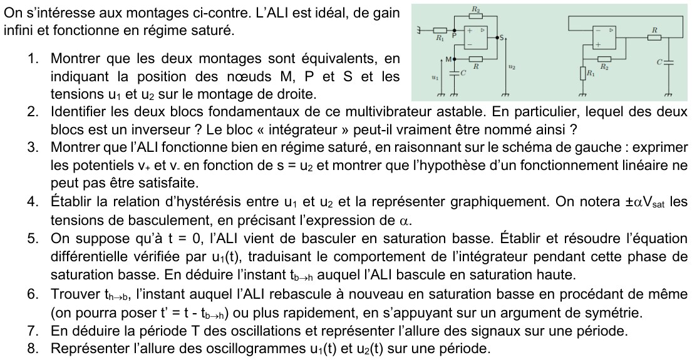
1) Montrer que les deux montages sont équivalents ; position des nœuds M, P, S et des tensions \(u_1\), \(u_2\)
On suit les fils du schéma de droite, borne par borne :
- l'entrée (+) est reliée à deux dipôles : \(R_1\) dont l'autre borne est à la masse, et \(R_2\) dont l'autre borne est à la sortie de l'ALI ;
- l'entrée (−) est reliée à deux dipôles : \(R\) dont l'autre borne est à la sortie, et \(C\) dont l'autre borne est à la masse ;
- la sortie de l'ALI est reliée à \(R_2\) et à \(R\).
C'est exactement la liste des connexions du schéma de gauche. On repère donc :
2) Les deux blocs fondamentaux ; lequel est un inverseur ? Le bloc « intégrateur » mérite-t-il son nom ?
- Bloc 1 — comparateur à hystérésis : l'ALI avec \(R_1,R_2\) en réaction sur (+) (pont diviseur à partir de la sortie). Son entrée est \(u_1\), appliquée sur la borne (−), et sa sortie \(u_2\). C'est donc un comparateur à hystérésis inverseur (régime saturé, cf. Ch4 §1.3).
- Bloc 2 — circuit \(R\)–\(C\) : entrée \(u_2\), sortie \(u_1\) (tension de \(C\)). Il ne contient pas d'ALI et ne change pas le signe : c'est un bloc non inverseur.
Justification : la loi des nœuds en M (aucun courant n'entre dans (−)) donne \(\dfrac{u_2-u_1}{R}=C\dfrac{du_1}{dt}\), soit \[ RC\,\frac{du_1}{dt}+u_1=u_2\qquad\Longleftrightarrow\qquad \underline H=\frac{u_1}{u_2}=\frac1{1+jRC\omega}. \] Ce n'est un intégrateur (\(RC\,\dot u_1\approx u_2\)) que si \(|u_1|\ll|u_2|\), c'est-à-dire pour \(\omega\gg1/RC\). Ici \(u_1\) reste entre \(\pm\alpha V_{sat}\) alors que \(u_2=\pm V_{sat}\) : l'approximation n'est bonne que pour \(\alpha\ll1\). Sinon, \(u_1\) est fait d'arcs d'exponentielle (question 8).
3) Montrer que l'ALI est en régime saturé : exprimer \(v_+\) et \(v_-\) en fonction de \(s=u_2\)
Notons \(\beta=\dfrac{R_1}{R_1+R_2}\) (\(0\lt\beta\lt1\)). Aucun courant n'entre dans (+) : \(R_2\) et \(R_1\) sont en série entre \(S\) et la masse, donc (pont diviseur) \[ v_+=v_P=\beta\,s. \] Le circuit \(R\)–\(C\) est un pont diviseur en notation complexe : \[ v_-=v_M=\frac{1/(jC\omega)}{R+1/(jC\omega)}\,s=\frac{s}{1+jRC\omega}. \] Hypothèse : régime linéaire, donc \(\varepsilon=v_+-v_-=0\). Pour \(s\neq0\) : \[ \beta=\frac1{1+jRC\omega}\ \Longrightarrow\ jRC\omega=\frac{1-\beta}{\beta}=\frac{R_2}{R_1}\ \Longrightarrow\ j\omega=p=\frac{R_2}{R_1RC}\gt0. \] Dans le langage temporel, \(s(t)\) vérifierait \(\dot s=p\,s\) avec \(p>0\) (pôle réel positif). Directement : \(v_-=u_1=\beta s\) dans \(RC\dot u_1+u_1=s\) donne \(\beta RC\,\dot s=(1-\beta)s\), soit \[ s(t)=s(0)\exp\!\Big(\frac{t}{\tau'}\Big),\qquad \tau'=\frac{R_1RC}{R_2}. \]
4) Relation d'hystérésis entre \(u_1\) et \(u_2\), avec \(\pm\alpha V_{sat}\)
En régime saturé : \(u_2=+V_{sat}\) si \(\varepsilon>0\), \(u_2=-V_{sat}\) si \(\varepsilon\lt0\), avec \[ \varepsilon=v_+-v_-=\alpha\,u_2-u_1,\qquad \alpha=\frac{R_1}{R_1+R_2}. \]
- \(u_2=+V_{sat}\) : \(\varepsilon=\alpha V_{sat}-u_1\gt0\) tant que \(u_1\lt+\alpha V_{sat}\). Dès que \(u_1\) atteint \(+\alpha V_{sat}\), \(\varepsilon\) devient négatif : l'ALI bascule en saturation basse.
- \(u_2=-V_{sat}\) : \(\varepsilon=-\alpha V_{sat}-u_1\lt0\) tant que \(u_1\gt-\alpha V_{sat}\). Dès que \(u_1\) descend à \(-\alpha V_{sat}\), \(\varepsilon\) devient positif : bascule en saturation haute.
5) À \(t=0\) l'ALI vient de basculer en saturation basse : équation différentielle de \(u_1(t)\), résolution, instant \(t_{b\to h}\)
Conditions initiales. L'ALI vient de passer à \(u_2=-V_{sat}\) : il l'a fait parce que \(u_1\) venait d'atteindre \(+\alpha V_{sat}\). Une tension de condensateur est continue : \(u_1(0)=+\alpha V_{sat}\).
Équation. Pendant cette phase \(u_2=-V_{sat}\) (constante). D'après la question 2 : \[ RC\,\frac{du_1}{dt}+u_1=-V_{sat}. \] Résolution (solution particulière \(-V_{sat}\), homogène \(Ae^{-t/RC}\)) : \[ u_1(t)=-V_{sat}+A\,e^{-t/RC},\qquad u_1(0)=\alpha V_{sat}\Rightarrow A=(1+\alpha)V_{sat}, \] \[ \boxed{\ u_1(t)=-V_{sat}+(1+\alpha)V_{sat}\,e^{-t/RC}\ } \] C'est une exponentielle qui descend de \(+\alpha V_{sat}\) vers l'asymptote \(-V_{sat}\), sans l'atteindre.
Instant de basculement. L'ALI rebascule quand \(u_1(t_{b\to h})=-\alpha V_{sat}\) : \[ -\alpha V_{sat}=-V_{sat}+(1+\alpha)V_{sat}\,e^{-t_{b\to h}/RC}\ \Longrightarrow\ e^{-t_{b\to h}/RC}=\frac{1-\alpha}{1+\alpha}. \] \[ \boxed{\ t_{b\to h}=RC\ln\frac{1+\alpha}{1-\alpha}=RC\ln\Big(1+\frac{2R_1}{R_2}\Big)\ } \] (car \(\dfrac{1+\alpha}{1-\alpha}=\dfrac{2R_1+R_2}{R_2}\)). Analyse dimensionnelle : \(RC\) est un temps, le logarithme est sans dimension. ✓
6) Instant \(t_{h\to b}\) du rebasculement en saturation basse
Par le calcul. À \(t_{b\to h}\), \(u_2\) passe à \(+V_{sat}\) et \(u_1=-\alpha V_{sat}\) (continuité). Avec \(t'=t-t_{b\to h}\) : \(RC\,\dot u_1+u_1=+V_{sat}\), donc \[ u_1=V_{sat}-(1+\alpha)V_{sat}\,e^{-t'/RC}. \] \(u_1\) monte de \(-\alpha V_{sat}\) vers \(+V_{sat}\) et atteint \(+\alpha V_{sat}\) quand \(e^{-t'/RC}=\dfrac{1-\alpha}{1+\alpha}\), soit \(t'=RC\ln\dfrac{1+\alpha}{1-\alpha}\).
Par symétrie. Le montage est symétrique par \((u_1,u_2)\to(-u_1,-u_2)\) : la seconde demi-période est la copie de la première, opposée.
7) Période \(T\) et allure des signaux
À \(t_{h\to b}\) le circuit retrouve exactement son état initial (\(u_2=-V_{sat}\), \(u_1=+\alpha V_{sat}\)) : c'est donc une période.
Cas particuliers et vérifications.
- \(R_1=R_2\) : \(\alpha=\tfrac12\), \(T=2RC\ln3\approx2{,}20\,RC\) ; \(R_2=2R_1\) : \(\alpha=\tfrac13\), \(T=2RC\ln2\approx1{,}39\,RC\).
- \(\alpha\ll1\) : \(\ln\dfrac{1+\alpha}{1-\alpha}\approx2\alpha\), donc \(T\approx4\alpha RC\approx\dfrac{4R_1RC}{R_2}\) (car \(\alpha\approx R_1/R_2\) si \(R_1\ll R_2\)). On retrouve la période du TP5a (comparateur non inverseur + vrai intégrateur) : les arcs d'exponentielle y sont presque des droites. ✓
8) Oscillogrammes \(u_1(t)\) et \(u_2(t)\) sur une période
- \(u_2\) : créneau symétrique de période \(T\), état bas pendant \([0,T/2]\), haut pendant \([T/2,T]\).
- \(u_1\) : \(+\alpha V_{sat}\to-\alpha V_{sat}\) pendant l'état bas (concavité tournée vers le haut, la tangente s'aplatit), puis \(-\alpha V_{sat}\to+\alpha V_{sat}\) pendant l'état haut. Aucune discontinuité de \(u_1\) (condensateur), mais un « point de rebroussement » de la dérivée.
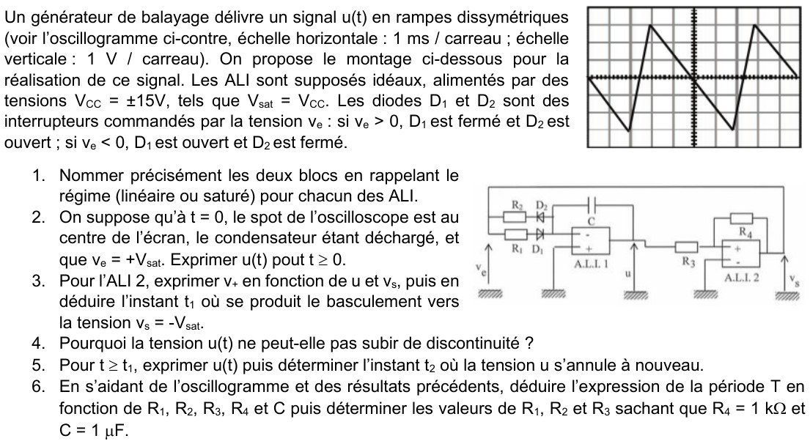
Schéma repris et vérifié sur l'énoncé officiel (le fil du haut relie la sortie \(v_s\) à l'entrée \(v_e\) : \(v_e=v_s\)) :
1) Nommer précisément les deux blocs et le régime de chaque ALI
- ALI 1 : intégrateur inverseur (condensateur \(C\) en réaction sur (−), (+) à la masse). Régime linéaire ; la résistance d'entrée vaut \(R_1\) (si \(v_e>0\)) ou \(R_2\) (si \(v_e\lt0\)) selon la diode qui conduit.
- ALI 2 : comparateur à hystérésis non inverseur (\(R_3\) entre \(u\) et (+), \(R_4\) en réaction de \(v_s\) sur (+), (−) à la masse). Régime saturé : \(v_s=\pm V_{sat}\), \(V_{sat}=V_{CC}=15\) V.
2) À \(t=0\), \(u=0\) et \(v_e=+V_{sat}\) : expression de \(u(t)\) pour \(t\ge0\)
\(v_e=+V_{sat}>0\) : \(D_1\) fermée, \(D_2\) ouverte. L'ALI 1 est linéaire avec (+) à la masse, donc \(v_-=0\) (masse virtuelle). Le courant dans \(R_1\) (diode idéale fermée) est \[ i=\frac{v_e-v_-}{R_1}=\frac{V_{sat}}{R_1}. \] Ce courant traverse \(C\) de la borne (−) vers la sortie ; la tension du condensateur est \(v_C=v_--u=-u\), donc \(i=C\dfrac{dv_C}{dt}=-C\dfrac{du}{dt}\) : \[ \frac{du}{dt}=-\frac{V_{sat}}{R_1C}\ \Longrightarrow\ \boxed{\ u(t)=-\frac{V_{sat}}{R_1C}\,t\ }\quad(u(0)=0). \] Interprétation : une rampe descendante de pente \(-V_{sat}/(R_1C)\), tant que \(v_s\) reste à \(+V_{sat}\) (comme sur l'oscillogramme, qui part du centre en descendant).
3) \(v_+\) de l'ALI 2 en fonction de \(u\) et \(v_s\) ; instant \(t_1\) du basculement vers \(-V_{sat}\)
Loi des nœuds (Millman) au nœud (+) (aucun courant dans l'entrée) avec les branches \(R_3\) vers \(u\) et \(R_4\) vers \(v_s\) : \[ v_+=\frac{u/R_3+v_s/R_4}{1/R_3+1/R_4}=\frac{R_4\,u+R_3\,v_s}{R_3+R_4}. \] \(v_-=0\), donc \(\varepsilon=v_+\). Au départ \(u=0\) et \(v_s=+V_{sat}\) : \(v_+=\dfrac{R_3V_{sat}}{R_3+R_4}\gt0\) — cohérent avec \(v_s=+V_{sat}\). L'ALI 2 bascule à \(-V_{sat}\) quand \(v_+\) devient négatif, c'est-à-dire pour \(v_+=0\) avec \(v_s=+V_{sat}\) : \[ R_4u+R_3V_{sat}=0\ \Longrightarrow\ u=-\frac{R_3}{R_4}V_{sat}. \] On pose \(A=\dfrac{R_3}{R_4}V_{sat}\) (amplitude crête). Avec \(u(t)=-\dfrac{V_{sat}}{R_1C}t\) : \[ \boxed{\ t_1=\frac{R_3}{R_4}\,R_1C\ } \]
4) Pourquoi \(u(t)\) ne peut-elle pas subir de discontinuité ?
\(u=-v_C\) : c'est (au signe près) la tension aux bornes du condensateur. Une discontinuité de \(v_C\) imposerait un courant \(i=C\,dv_C/dt\) infini, et ferait varier l'énergie \(\frac12Cv_C^2\) de façon instantanée (puissance infinie). Le courant est ici limité par \(R_1\) ou \(R_2\) : \(v_C\), donc \(u\), est continue. Seule sa dérivée saute aux basculements (la pente change : angle vif sur l'oscillogramme, pas de saut).
5) Pour \(t\ge t_1\) : \(u(t)\), puis l'instant \(t_2\) où \(u\) s'annule à nouveau
Après le basculement \(v_e=v_s=-V_{sat}\lt0\) : \(D_1\) s'ouvre, \(D_2\) se ferme, le courant passe par \(R_2\) : \(i=\dfrac{v_e}{R_2}=-\dfrac{V_{sat}}{R_2}\) et \(-C\dot u=i\), donc \[ \frac{du}{dt}=+\frac{V_{sat}}{R_2C}\quad\Longrightarrow\quad u(t)=u(t_1)+\frac{V_{sat}}{R_2C}(t-t_1)=\boxed{\,-\frac{R_3}{R_4}V_{sat}+\frac{V_{sat}}{R_2C}(t-t_1)\,}\quad(t\ge t_1). \] La rampe est montante, de pente \(+V_{sat}/(R_2C)\). Elle s'annule quand \(\dfrac{V_{sat}}{R_2C}(t_2-t_1)=\dfrac{R_3}{R_4}V_{sat}\) : \[ \boxed{\ t_2=t_1+\frac{R_3}{R_4}R_2C=\frac{R_3}{R_4}(R_1+R_2)C\ } \] La montée continue jusqu'à \(u=+A\), où \(v_+=\dfrac{R_4u-R_3V_{sat}}{R_3+R_4}\) s'annule (\(v_s=-V_{sat}\)) : l'ALI 2 rebascule à \(+V_{sat}\) à \(t_3=t_1+2\dfrac{R_3}{R_4}R_2C\).
6) Période \(T\) en fonction de \(R_1,\dots,R_4,C\) ; valeurs de \(R_1\), \(R_2\), \(R_3\)
En régime établi, \(u\) décrit un cycle entre \(-A\) et \(+A\), d'excursion \(2A=2\dfrac{R_3}{R_4}V_{sat}\) :
- descente à la pente \(V_{sat}/(R_1C)\) : \(t_{desc}=\dfrac{2A}{V_{sat}/(R_1C)}=2\dfrac{R_3}{R_4}R_1C\) ;
- montée à la pente \(V_{sat}/(R_2C)\) : \(t_{mont}=2\dfrac{R_3}{R_4}R_2C\).
Lecture de l'oscillogramme (1 ms/carreau, 1 V/carreau) : \(u\) oscille entre −3 V et +3 V (3 carreaux de part et d'autre du centre), la descente dure 4 carreaux (4 ms), la montée 1 carreau (1 ms), donc \(T=5\) ms. Le premier tronçon (de \(u=0\) à \(-3\) V) ne dure que 2 ms, puisqu'on part du centre : c'est \(t_1\), la moitié de \(t_{desc}\).
- \(R_3\) (amplitude) : \(A=\dfrac{R_3}{R_4}V_{sat}=3\) V \(\Rightarrow\dfrac{R_3}{R_4}=\dfrac{3}{15}=\dfrac15\Rightarrow R_3=\dfrac{R_4}{5}=200\ \Omega\).
- \(R_1\) (descente 4 ms) : \(2\cdot\dfrac15\,R_1\,C=4\) ms \(\Rightarrow R_1=\dfrac{4\times10^{-3}\times5}{2\times10^{-6}}=10\ \text{k}\Omega\).
- \(R_2\) (montée 1 ms) : \(2\cdot\dfrac15\,R_2\,C=1\) ms \(\Rightarrow R_2=\dfrac{1\times10^{-3}\times5}{2\times10^{-6}}=2{,}5\ \text{k}\Omega\).
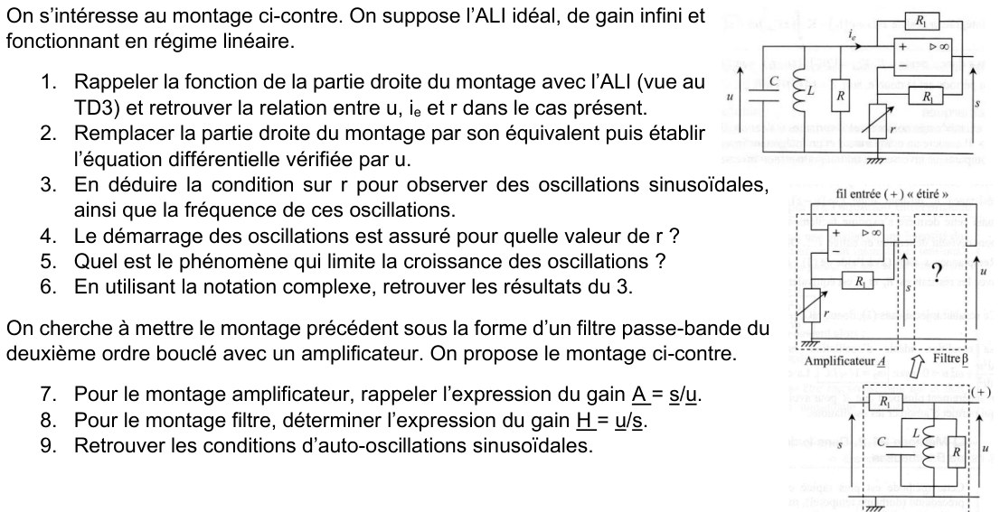
1) Fonction de la partie droite (vue au TD3) et relation entre \(u\), \(i_e\) et \(r\)
Lecture du circuit. La sortie \(s\) revient sur (+) par \(R_1\) (haut) et sur (−) par \(R_1\) (bas) ; (−) est relié à la masse par \(r\). Entrée (+) : le courant \(i_e\) entre ; sa tension est \(v_+=u\).
Régime linéaire (supposé) : \(v_-=v_+=u\). Pont diviseur à l'entrée (−) (aucun courant dans (−)) : \(v_-=s\dfrac{r}{R_1+r}\), donc \[ u=s\,\frac{r}{R_1+r}\ \Longrightarrow\ s=u\,\frac{R_1+r}{r}. \] Le courant \(i_e\) traverse \(R_1\) (haut) de (+) vers \(S\) (rien n'entre dans (+)) : \[ i_e=\frac{u-s}{R_1}=\frac{u}{R_1}\Big(1-\frac{R_1+r}{r}\Big)=\frac{u}{R_1}\cdot\Big(-\frac{R_1}{r}\Big)=-\frac{u}{r}. \]
2) Remplacer la partie droite par son équivalent ; équation différentielle de \(u\)
Loi des nœuds au nœud supérieur (les quatre branches vont du nœud à la masse) : \[ C\frac{du}{dt}+\frac1L\int u\,dt+\frac uR+i_e=0,\qquad i_e=-\frac ur. \] On dérive pour éliminer l'intégrale : \[ C\ddot u+\frac1L u+\Big(\frac1R-\frac1r\Big)\dot u=0\ \Longleftrightarrow\ \boxed{\ \ddot u+\frac1C\Big(\frac1R-\frac1r\Big)\dot u+\frac1{LC}\,u=0\ } \] C'est la forme canonique \(\ddot u+\dfrac{\omega_0}{Q}\dot u+\omega_0^2u=0\) avec \(\omega_0=\dfrac1{\sqrt{LC}}\) et \(\dfrac{1}{Q}=\sqrt{\dfrac LC}\Big(\dfrac1R-\dfrac1r\Big)\). Le terme d'amortissement peut changer de signe grâce à \(-r\).
3) Condition sur \(r\) pour des oscillations sinusoïdales ; fréquence
Des oscillations sinusoïdales d'amplitude constante exigent un amortissement nul : le coefficient de \(\dot u\) est nul, \[ \frac1R-\frac1r=0. \] L'équation devient \(\ddot u+\omega_0^2u=0\) : solution sinusoïdale pure.
4) Valeur de \(r\) assurant le démarrage des oscillations
Pour que le signal croisse à partir du bruit, l'amortissement doit être négatif : \(\dfrac1R-\dfrac1r\lt0\), soit \(\dfrac1r\gt\dfrac1R\). La solution est alors \(u\propto e^{\sigma t}\cos\omega t\) avec \(\sigma=\dfrac1{2C}\Big(\dfrac1r-\dfrac1R\Big)\gt0\).
5) Phénomène limitant la croissance des oscillations
L'amplitude ne croît pas indéfiniment : \(s\) ne peut pas dépasser \(\pm V_{sat}\). Quand \(|s|\) atteint \(V_{sat}\), l'ALI sature : le montage n'est plus linéaire, la résistance négative effective augmente en valeur (le gain « baisse ») et le gain de boucle retombe à 1 en moyenne. L'amplitude de \(u\) se stabilise vers \(|u|\lesssim V_{sat}\dfrac{r}{R_1+r}\) (car \(u=s\,r/(R_1+r)\)).
6) Retrouver les résultats de 3) en notation complexe
En régime sinusoïdal, chaque branche vue du nœud a une admittance : \(jC\omega\), \(\dfrac1{jL\omega}\), \(\dfrac1R\) et \(-\dfrac1r\). La loi des nœuds s'écrit \(\underline Y\,\underline u=0\) avec \[ \underline Y=jC\omega+\frac1{jL\omega}+\frac1R-\frac1r=\Big(\frac1R-\frac1r\Big)+j\Big(C\omega-\frac1{L\omega}\Big). \] Pour \(\underline u\neq0\), il faut \(\underline Y=0\) : partie réelle ET partie imaginaire nulles : \[ \operatorname{Re}:\ \frac1R=\frac1r\Rightarrow \boxed{r=R}\qquad \operatorname{Im}:\ C\omega=\frac1{L\omega}\Rightarrow\boxed{\omega=\frac1{\sqrt{LC}}=\omega_0}. \] Mêmes résultats qu'en 3). ✓
7) Montage amplificateur : gain \(\underline A=\underline s/\underline u\)
Montage non inverseur : \(v_+=u\), \(v_-=s\dfrac{r}{R_1+r}\), régime linéaire \(v_-=v_+\) : \[ \boxed{\ \underline A=\frac su=\frac{R_1+r}{r}=1+\frac{R_1}{r}\ }\quad(\text{réel, positif : pas de déphasage}). \]
8) Montage filtre : gain \(\underline H=\underline u/\underline s\)
Pont diviseur (le filtre est à vide, car (+) n'absorbe aucun courant) : \[ \underline H=\frac{\underline Z_p}{R_1+\underline Z_p}=\frac1{1+R_1\underline Y_p},\qquad \underline Y_p=\frac1R+jC\omega+\frac1{jL\omega}. \] On pose \(\omega_0=\dfrac1{\sqrt{LC}}\), \(x=\dfrac\omega{\omega_0}\), \(Z_0=\sqrt{L/C}\). Alors \(C\omega-\dfrac1{L\omega}=\dfrac1{Z_0}\Big(x-\dfrac1x\Big)\) et \[ \underline H=\frac1{\Big(1+\dfrac{R_1}R\Big)+j\dfrac{R_1}{Z_0}\Big(x-\dfrac1x\Big)}=\frac{H_0}{1+jQ\Big(x-\dfrac1x\Big)} \] avec \[ \boxed{\ H_0=\frac{R}{R+R_1},\qquad Q=\frac{R_1/Z_0}{1+R_1/R}=(R\parallel R_1)\sqrt{\frac CL}\ } \] C'est un filtre passe-bande du deuxième ordre, centré en \(\omega_0\), de gain maximal \(H_0\lt1\) et de facteur de qualité \(Q\).
9) Retrouver les conditions d'auto-oscillations sinusoïdales
On écrit \(\underline s=\underline A\,\underline u\) et \(\underline u=\underline H\,\underline s\), donc \((1-\underline A\,\underline H)\,\underline u=0\) : critère de Barkhausen \(\underline A\,\underline H=1\).
\[ \underline A\,\underline H=\frac{\Big(1+\dfrac{R_1}r\Big)\,H_0}{1+jQ\Big(x-\dfrac1x\Big)}=1. \]
Partie imaginaire : \(x-\dfrac1x=0\Rightarrow x=1\), soit \(\omega=\omega_0=\dfrac1{\sqrt{LC}}\) (condition de phase).
Module (à \(x=1\)) : \(\Big(1+\dfrac{R_1}r\Big)\dfrac{R}{R+R_1}=1\Rightarrow (r+R_1)R=r(R+R_1)\Rightarrow R_1R=rR_1\Rightarrow\boxed{r=R}\).
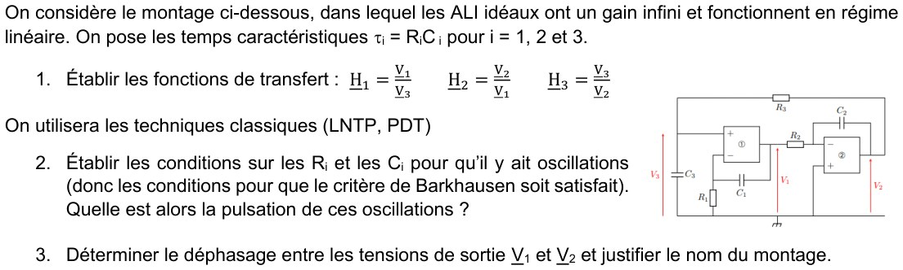
1) Fonctions de transfert \(\underline H_1=\dfrac{V_1}{V_3}\), \(\underline H_2=\dfrac{V_2}{V_1}\), \(\underline H_3=\dfrac{V_3}{V_2}\) (LNTP, PDT)
- \(\underline H_3\) — pont diviseur de tension. L'entrée (+) de ① n'absorbe pas de courant : \(R_3\) et \(C_3\) sont en série entre \(V_2\) et la masse, \(V_3\) est aux bornes de \(C_3\) : \[ \underline H_3=\frac{1/(jC_3\omega)}{R_3+1/(jC_3\omega)}=\boxed{\frac1{1+j\tau_3\omega}}. \]
- \(\underline H_1\) — ALI ① non inverseur. Régime linéaire : \(v_-=v_+=V_3\). L'entrée (−) est le point milieu du pont \(C_1\) (vers \(V_1\)) / \(R_1\) (vers la masse) : \[ V_3=V_1\,\frac{R_1}{R_1+1/(jC_1\omega)}=V_1\frac{j\tau_1\omega}{1+j\tau_1\omega}\ \Longrightarrow\ \underline H_1=\boxed{\frac{1+j\tau_1\omega}{j\tau_1\omega}=1+\frac1{j\tau_1\omega}}. \]
- \(\underline H_2\) — ALI ② intégrateur inverseur. (+) à la masse donc \(v_-=0\) ; loi des nœuds (Millman) en (−), branches \(R_2\) vers \(V_1\) et \(C_2\) vers \(V_2\) : \[ \frac{V_1-0}{R_2}+jC_2\omega\,(V_2-0)=0\ \Longrightarrow\ \underline H_2=-\frac{1}{jR_2C_2\omega}=\boxed{-\frac1{j\tau_2\omega}=\frac{j}{\tau_2\omega}}. \]
2) Conditions sur les \(R_i\), \(C_i\) pour qu'il y ait oscillations ; pulsation
Le circuit est bouclé : \(V_3=\underline H_3V_2=\underline H_3\underline H_2V_1=\underline H_3\underline H_2\underline H_1V_3\), donc \((1-\underline H_1\underline H_2\underline H_3)V_3=0\). Pour \(V_3\neq0\) : critère de Barkhausen \(\underline H_1\underline H_2\underline H_3=1\).
\[ \underline H_1\underline H_2\underline H_3=\frac{1+j\tau_1\omega}{j\tau_1\omega}\cdot\Big(-\frac1{j\tau_2\omega}\Big)\cdot\frac1{1+j\tau_3\omega}=\frac{1+j\tau_1\omega}{\tau_1\tau_2\,\omega^2\,(1+j\tau_3\omega)} \]
(car \(j\cdot j=-1\) au dénominateur, qui annule le signe moins). L'égalité à 1 s'écrit
\[ 1+j\tau_1\omega=\tau_1\tau_2\omega^2+j\,\tau_1\tau_2\tau_3\,\omega^3. \]
Partie réelle : \(1=\tau_1\tau_2\omega^2\Rightarrow\omega^2=\dfrac1{\tau_1\tau_2}\).
Partie imaginaire : \(\tau_1\omega=\tau_1\tau_2\tau_3\omega^3\Rightarrow1=\tau_2\tau_3\omega^2\Rightarrow\omega^2=\dfrac1{\tau_2\tau_3}\).
Les deux conditions sont compatibles si et seulement si \(\tau_1=\tau_3\) :
3) Déphasage entre \(V_1\) et \(V_2\) ; justification du nom
D'après la question 1, \(V_2=\underline H_2V_1=\dfrac{j}{\tau_2\omega}V_1\). Le facteur \(j=e^{j\pi/2}\) : \[ \arg\frac{V_2}{V_1}=+\frac\pi2,\qquad \Big|\frac{V_2}{V_1}\Big|=\frac1{\tau_2\omega_0}=\sqrt{\frac{\tau_1}{\tau_2}}. \] \(V_2\) est en avance de \(\pi/2\) sur \(V_1\) (quadrature de phase) : si \(v_1=V\cos\omega_0t\), alors \(v_2=-\dfrac V{\tau_2\omega_0}\sin\omega_0t\).
3. Correction du TP5a — conception et réalisation d'un MVA
Le TP5a comporte deux feuilles : « Conception d'un oscillateur auto-entretenu » (05/10/2026, 14 questions, dont les réponses sont données en page 2 de la feuille) et « Réalisation d'un MVA typique » (07/10/2026, 4 manipulations). On corrige les deux : la conception question par question, la réalisation manipulation par manipulation avec tous les calculs de préparation et les résultats attendus. Données du labo : ALI alimenté en \(\pm15\) V (\(V_{sat}\approx15\) V en théorie ; en pratique \(\approx13\)–\(14\) V), résistances \(500\ \Omega\), \(1\ \text{k}\Omega\) et \(R_{var}\), \(C=1\ \mu\text{F}\), 2 diodes 1N4007.
3.1 · TP5a — Conception d'un oscillateur auto-entretenu (Q1 à Q14)
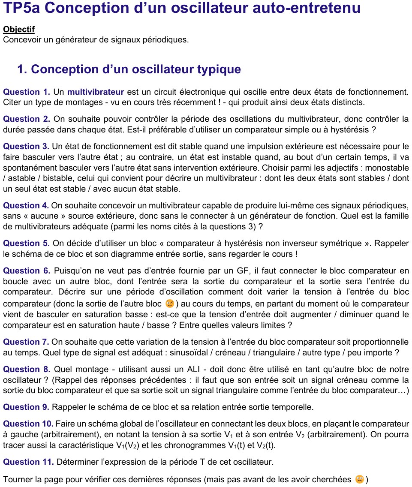
Q1) Un type de montage (vu très récemment en cours) qui produit deux états distincts
Q2) Pour contrôler la durée passée dans chaque état : comparateur simple ou à hystérésis ?
- Comparateur simple (un seul seuil) : dès que la tension de l'autre bloc franchit le seuil, la sortie bascule, ce qui inverse aussitôt le sens de variation de cette tension, qui repasse le seuil : le circuit rebascule presque immédiatement. Le temps passé dans chaque état est alors fixé par le bruit et les retards de l'ALI, pas par un réglage.
- Comparateur à hystérésis (deux seuils \(\pm\alpha V_{sat}\)) : le circuit reste dans un état tant que la tension de l'autre bloc n'a pas parcouru toute la largeur \(2\alpha V_{sat}\) entre les deux seuils. La durée de chaque état dépend alors des composants (\(R_1/R_2\), \(R\), \(C\)) : elle est réglable. Bonus : l'hystérésis rend le montage insensible au bruit (Ch4, Q3).
Q3) Choisir parmi monostable / astable / bistable pour un multivibrateur
Les trois adjectifs correspondent aux trois définitions proposées :
- bistable = « dont les deux états sont stables » (une impulsion extérieure est nécessaire pour changer d'état : le trigger de Schmitt) ;
- monostable = « dont un seul état est stable » ;
- astable = « avec aucun état stable » : au bout d'un certain temps il bascule spontanément, sans intervention extérieure.
Q4) Famille de multivibrateurs adéquate pour produire seul des signaux périodiques, sans générateur
Q5) Rappeler le schéma de ce bloc et son diagramme entrée-sortie
Ici l'entrée est \(V_2\) et la sortie \(V_1\) (notations de l'énoncé). \(V_2\) arrive par \(R_1\) sur (+), \(R_2\) reboucle la sortie sur (+), (−) est à la masse (\(V_{réf}=0\)).
Loi des nœuds au nœud P (aucun courant dans (+)) : \(\varepsilon=v_+-v_-=v_+\) car \(v_-=0\), et \[ \varepsilon=\frac{R_2V_2+R_1V_1}{R_1+R_2}. \]
- \(V_1=+V_{sat}\) : il y reste tant que \(\varepsilon>0\), soit \(V_2>-\dfrac{R_1}{R_2}V_{sat}\). Il bascule vers \(-V_{sat}\) à \(V_2=-\dfrac{R_1}{R_2}V_{sat}\).
- \(V_1=-V_{sat}\) : il y reste tant que \(\varepsilon\lt0\), soit \(V_2\lt+\dfrac{R_1}{R_2}V_{sat}\). Il bascule vers \(+V_{sat}\) à \(V_2=+\dfrac{R_1}{R_2}V_{sat}\).
Q6) Comment doit varier la tension d'entrée du comparateur sur une période, en partant du basculement en saturation basse ?
Le comparateur vient de basculer en saturation basse : cela s'est produit quand \(V_2\) a atteint le seuil bas, donc \(V_2=-\dfrac{R_1}{R_2}V_{sat}\). Pour qu'il rebascule, \(V_2\) doit atteindre le seuil haut \(+\dfrac{R_1}{R_2}V_{sat}\).
- En saturation basse (\(V_1=-V_{sat}\)) : \(V_2\) doit augmenter, de \(-\dfrac{R_1}{R_2}V_{sat}\) à \(+\dfrac{R_1}{R_2}V_{sat}\).
- En saturation haute (\(V_1=+V_{sat}\)) : \(V_2\) doit diminuer, de \(+\dfrac{R_1}{R_2}V_{sat}\) à \(-\dfrac{R_1}{R_2}V_{sat}\).
Q7) Quel type de signal pour que cette variation soit proportionnelle au temps ?
Q8) Quel montage à ALI utiliser comme autre bloc ?
Il faut un montage qui transforme un créneau (\(V_1=\pm V_{sat}\), constant par morceaux) en triangle, c'est-à-dire qui intègre, et qui inverse le signe (Q6).
Q9) Schéma de ce bloc et relation temporelle entrée-sortie
Régime linéaire, (+) à la masse : \(v_-=0\). Aucun courant ne rentre dans (−) : le courant \(V_1/R\) de \(R\) traverse \(C\), dont la tension est \(v_C=v_--V_2=-V_2\) : \[ \frac{V_1}{R}=C\frac{d(-V_2)}{dt}\ \Longrightarrow\ \frac{dV_2}{dt}=-\frac{V_1}{RC}. \] En intégrant entre une date de référence \(t_i\) et \(t\) :
Q10) Schéma global : comparateur à gauche, \(V_1\) à sa sortie, \(V_2\) à son entrée ; caractéristique \(V_1(V_2)\) et chronogrammes
La caractéristique \(V_1(V_2)\) est le cycle d'hystérésis de la question 5. Chronogrammes sur deux périodes (départ à \(t=0\) juste après un basculement en saturation basse) :
Q11) Expression de la période \(T\)
Conditions initiales. À \(t=0\) le comparateur vient de basculer en saturation basse : \(V_1=-V_{sat}\), et \(V_2(0)=-\dfrac{R_1}{R_2}V_{sat}\) (seuil bas, \(V_2\) est continue).
Phase 1 (\(V_1=-V_{sat}\), jusqu'à \(t_{b1}\)). D'après Q9 : \[ \frac{dV_2}{dt}=-\frac{-V_{sat}}{RC}=+\frac{V_{sat}}{RC}\ \Longrightarrow\ V_2(t)=-\frac{R_1}{R_2}V_{sat}+\frac{V_{sat}}{RC}\,t. \] Le basculement vers \(V_1=+V_{sat}\) a lieu quand \(V_2(t_{b1})=+\dfrac{R_1}{R_2}V_{sat}\) : \[ \frac{V_{sat}}{RC}\,t_{b1}=2\frac{R_1}{R_2}V_{sat}\ \Longrightarrow\ t_{b1}=\frac{2R_1RC}{R_2}. \] (\(V_{sat}\) se simplifie.) Phase 2 : par symétrie (\(V_1=+V_{sat}\), \(V_2\) descend de \(+\frac{R_1}{R_2}V_{sat}\) à \(-\frac{R_1}{R_2}V_{sat}\) à la même vitesse en valeur absolue), elle dure aussi \(t_{b1}\). Une période = deux phases :
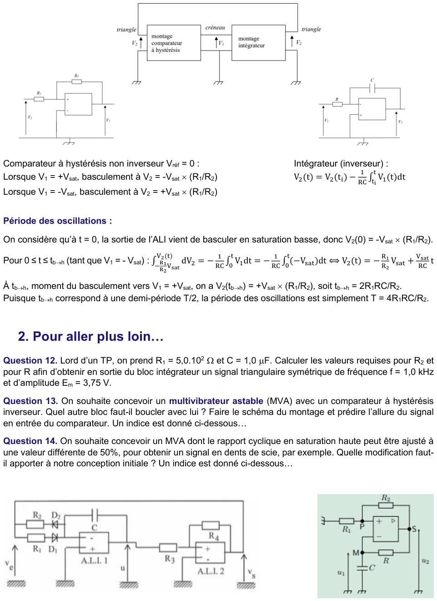
Q12) Avec \(R_1=5{,}0\times10^2\ \Omega\) et \(C=1{,}0\ \mu\)F, calculer \(R_2\) et \(R\) pour un triangle symétrique de fréquence \(f=1{,}0\) kHz et d'amplitude \(E_m=7{,}5\) V
Hypothèses : \(V_{sat}=15\) V ; « amplitude » = valeur crête du triangle centré sur 0, donc \(E_m=\dfrac{R_1}{R_2}V_{sat}\).
Amplitude (fixe \(R_2\)) : \[ \frac{R_1}{R_2}=\frac{E_m}{V_{sat}}=\frac{7{,}5}{15}=\frac12\ \Longrightarrow\ R_2=2R_1=1{,}0\times10^3\ \Omega. \] Fréquence (fixe \(R\)) : \(T=\dfrac1f=1{,}0\) ms \(=\dfrac{4R_1RC}{R_2}=4\cdot\dfrac12\cdot RC=2RC\), donc \[ R=\frac{T}{2C}=\frac{1{,}0\times10^{-3}}{2\times1{,}0\times10^{-6}}=5{,}0\times10^{2}\ \Omega. \]
Q13) MVA à comparateur à hystérésis inverseur : quel autre bloc boucler ? Schéma et allure du signal en entrée du comparateur
Raisonnement par le signe. Le comparateur est inverseur : il est en saturation haute tant que son entrée est sous le seuil haut. Pour qu'il bascule vers le bas, son entrée doit monter jusqu'au seuil haut \(+\alpha V_{sat}\) pendant qu'il est en saturation haute ; elle doit descendre pendant qu'il est en saturation basse. La pente de l'entrée a donc le même signe que la sortie du comparateur : l'autre bloc doit être non inverseur.
Allure de l'entrée du comparateur : \(u_1\) est la tension de \(C\) ; elle vérifie \(RC\,\dot u_1+u_1=u_2=\pm V_{sat}\). Elle décrit donc des arcs d'exponentielle (pas de vraies droites) entre les seuils \(-\alpha V_{sat}\) et \(+\alpha V_{sat}\), avec \(\alpha=\dfrac{R_1}{R_1+R_2}\), continus, à pente alternée (figure de la correction du TD5 Ex1, Q8).
Q14) Quelle modification faut-il apporter à la conception initiale pour ajuster le rapport cyclique en saturation haute à une valeur ≠ 50 % ?
Idée. Avec un intégrateur dont la résistance d'entrée est la même pour \(V_1=+V_{sat}\) et pour \(V_1=-V_{sat}\), les deux rampes ont la même pente en valeur absolue : rapport cyclique 50 %. Pour obtenir deux pentes différentes, il faut deux résistances différentes selon le signe de \(V_1\). On les sélectionne avec des diodes en sens opposés (indice de la feuille, repris au TD5 Ex2).
Calcul (comparateur non inverseur, \(\alpha=R_1/R_2\), diodes idéales).
- \(V_1=+V_{sat}\) : \(\dfrac{dV_2}{dt}=-\dfrac{V_{sat}}{R_aC}\) ; \(V_2\) descend de \(+\alpha V_{sat}\) à \(-\alpha V_{sat}\) en \(t_h=2\alpha R_aC\).
- \(V_1=-V_{sat}\) : \(\dfrac{dV_2}{dt}=+\dfrac{V_{sat}}{R_bC}\) ; \(V_2\) monte en \(t_b=2\alpha R_bC\).
3.2 · TP5a — Réalisation d'un MVA typique (07/10/2026)
Câbler le montage en calculant \(R_2=R_{var}\) pour des basculements à \(\pm3{,}75\) V ; choisir le signal d'entrée ; visualiser oscillogrammes et diagramme entrée-sortie ; écarts avec la théorie
Calcul de \(R_2\). Seuils \(\pm\dfrac{R_1}{R_2}V_{sat}=\pm3{,}75\) V avec \(V_{sat}=15\) V : \[ \frac{R_1}{R_2}=\frac{3{,}75}{15}=\frac14\ \Longrightarrow\ R_2=4R_1=4\times500=2{,}0\ \text{k}\Omega. \]
Choix du signal d'entrée. Il faut un signal alternatif symétrique qui franchit les deux seuils : un sinus (ou un triangle) d'amplitude crête 5 V (\(>3{,}75\) V, sinon aucun basculement ; \(\lt V_{sat}\)), de fréquence 100 Hz (assez bas pour que le slew rate ne déforme pas les flancs), sans composante continue (offset du GF à 0).
Instants de basculement attendus. \(V_2=5\sin(2\pi t/T)\) atteint \(+3{,}75\) V pour \(\sin\varphi=0{,}75\), soit \(\varphi=\arcsin0{,}75=48{,}6^\circ\) : \(t=0{,}135\,T\) (sortie \(\to+V_{sat}\)). Elle atteint \(-3{,}75\) V en \(\varphi=180^\circ+48{,}6^\circ\) : \(t=0{,}635\,T\) (sortie \(\to-V_{sat}\)). La sortie reste donc en saturation haute pendant exactement \(T/2\) : rapport cyclique \(50\) %.
Diagramme entrée-sortie (mode XY de l'oscilloscope, CH1 = entrée \(V_2\) sur X, CH2 = sortie \(V_1\) sur Y) : le cycle d'hystérésis de la question 5, non inverseur, avec \(\pm3{,}75\) V en abscisse.
- \(V_{sat}\) réelle \(\approx\pm13\)–\(14\) V (pas 15 V) : le créneau est plus bas et les seuils valent \(\tfrac14V_{sat}\approx\pm3{,}4\) V.
- Résistance de sortie du GF (\(\approx50\ \Omega\)) en série avec \(R_1\) : seuil réel \(=\dfrac{R_1+50}{R_2}V_{sat}\), soit \(+10\) % environ.
- Tolérance des résistances (5 %), \(R_{var}\) peu précise.
- Slew rate de l'ALI (µA741 : \(0{,}5\) V/µs ; TL081 : \(13\) V/µs) : les flancs du créneau ne sont pas verticaux et le cycle XY a des côtés inclinés ; un 741 met \(\approx60\ \mu\)s pour passer de \(-15\) à \(+15\) V.
- Offset résiduel du GF ou de l'ALI : cycle décentré.
\(R=1\ \text{k}\Omega\), \(C=1\ \mu\)F ; \(f=100\) Hz, \(E_{max}=5\) V, forme donnant un triangle ; amplitude de sortie attendue
Forme du signal : un créneau symétrique (\(\pm5\) V, sans offset) donne une sortie triangulaire (intégrale d'une constante par morceaux = rampes).
Amplitude attendue. \(RC=1\) ms ; \(T=1/f=10\) ms ; demi-période \(5\) ms. Pendant une demi-période l'entrée vaut \(\pm E_{max}\) et \[ \Delta V_2=\frac{E_{max}}{RC}\cdot\frac T2=\frac{5}{10^{-3}}\times5\times10^{-3}=25\ \text{V crête à crête}. \] Le triangle est symétrique autour de 0 : amplitude crête \(\boxed{\ \dfrac{E_{max}T}{4RC}=\dfrac{E_{max}}{4fRC}=12{,}5\ \text{V}\ }\) (pente \(5\) V/ms).
Les deux paramètres facilement modifiables pour écrêter (saturer l'ALI) sans toucher au câblage : l'amplitude \(E_{max}\) du GF et sa fréquence \(f\). La sortie sature dès que \(\dfrac{E_{max}}{4fRC}>V_{sat}\) : \[ E_{max}^{crit}=4fRC\,V_{sat}=4\times100\times10^{-3}\times15=6{,}0\ \text{V}\ (f=100\ \text{Hz}),\qquad f^{crit}=\frac{E_{max}}{4RC\,V_{sat}}=\frac{5}{4\times10^{-3}\times15}\approx83\ \text{Hz}\ (E_{max}=5\ \text{V}). \]
Regrouper les deux blocs (GF débranché) ; fréquence attendue ; écarts ; \(f'=2{,}0\) kHz en faisant varier \(R_2\) ; autre moyen sans changer les amplitudes
Câblage. Comparateur (\(R_1=500\ \Omega\), \(R_2=2{,}0\ \text{k}\Omega\)) + intégrateur (\(R=1\ \text{k}\Omega\), \(C=1\ \mu\)F) comme sur la figure de la Q10. Relier toutes les masses (les deux blocs partagent la même masse), alimenter \(\pm15\) V avant tout.
Fréquence attendue. \(\alpha=\dfrac{R_1}{R_2}=\dfrac14\) : \[ T=\frac{4R_1RC}{R_2}=4\times\frac14\times10^{3}\times10^{-6}=1{,}0\ \text{ms}\quad\Longrightarrow\quad f=1{,}0\ \text{kHz}. \] Amplitudes : \(V_1\) (créneau) \(\pm15\) V ; \(V_2\) (triangle) \(\pm\dfrac14\times15=\pm3{,}75\) V, soit \(7{,}5\) V crête à crête.
- Période : tolérances de \(R\), \(R_1\), \(R_{var}\) (5 %) et surtout de \(C\) (souvent 10–20 %) ⟹ \(T\) à quelques % près. \(T\) ne dépend pas de \(V_{sat}\).
- Amplitudes : \(V_{sat}\approx13\)–\(14\) V ⟹ créneau \(\approx\pm13{,}5\) V et triangle \(\approx\pm3{,}4\) V (le triangle est proportionnel à \(V_{sat}\)).
- Slew rate : les flancs du créneau ne sont pas verticaux ; chaque basculement prend \(\approx2V_{sat}/\text{SR}\) : \(T\) légèrement plus long, sommets du triangle arrondis.
- Dissymétrie de \(+V_{sat}\) et \(-V_{sat}\), offset de l'ALI : rapport cyclique légèrement différent de 50 %, triangle un peu décentré.
Passer à \(f'=2{,}0\) kHz en variant \(R_2\). \(T=\dfrac{4R_1RC}{R_2}\) : \(f\propto R_2\). Pour doubler la fréquence : \[ R_2'=2R_2=4{,}0\ \text{k}\Omega. \] Effet sur les amplitudes : le créneau reste \(\pm V_{sat}\) (inchangé) ; le triangle \(\pm\dfrac{R_1}{R_2'}V_{sat}\) est divisé par 2 : \(\pm3{,}75\to\pm1{,}875\) V (seuils plus resserrés, rampes de même pente \(V_{sat}/RC\), donc demi-période deux fois plus courte).
Doubler \(f\) sans changer les amplitudes : il faut garder \(\alpha=R_1/R_2=\tfrac14\) (donc les seuils \(\pm3{,}75\) V) et modifier la constante de temps \(RC\) de l'intégrateur :
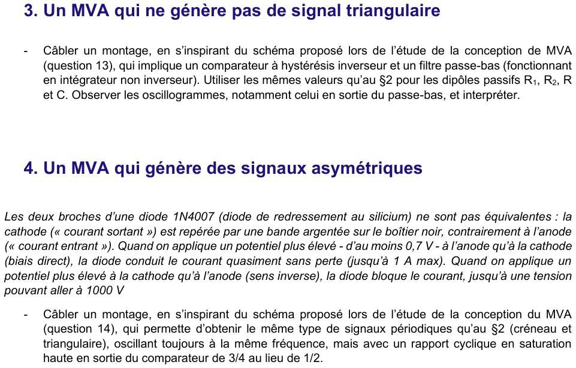
Comparateur à hystérésis inverseur + filtre passe-bas (intégrateur non inverseur), mêmes \(R_1,R_2,R,C\) qu'au §2 ; observer, notamment la sortie du passe-bas ; interpréter
Câblage : celui de la figure de la Q13 / TD5 Ex1 : \(R_1=500\ \Omega\) de (+) à la masse, \(R_2=2{,}0\ \text{k}\Omega\) de la sortie à (+), \(R=1\ \text{k}\Omega\) de la sortie à (−), \(C=1\ \mu\)F de (−) à la masse.
Prévision. Ici (comparateur inverseur) \(\alpha=\dfrac{R_1}{R_1+R_2}=\dfrac{500}{2500}=0{,}2\) :
- seuils sur \(u_1\) : \(\pm\alpha V_{sat}=\pm3{,}0\) V (au lieu de \(\pm3{,}75\) V : pas le même \(\alpha\) que le montage non inverseur avec les mêmes résistances) ;
- \(T=2RC\ln\dfrac{1+\alpha}{1-\alpha}=2\times10^{-3}\times\ln1{,}5=2\times10^{-3}\times0{,}4055=0{,}811\ \text{ms}\), soit \(f\approx1{,}23\) kHz.
Câbler, avec les diodes 1N4007, un montage donnant créneau et triangle à la même fréquence qu'au §2 mais avec un rapport cyclique en saturation haute de 3/4
Montage : celui du §2 où l'on remplace \(R\) par \((R_a+D_a)\parallel(R_b+D_b)\) (figure de la Q14). Comparateur inchangé (\(\alpha=\tfrac14\)).
Dimensionnement. Deux conditions :
- même fréquence qu'au §2 : \(T=2\alpha C(R_a+R_b)=1{,}0\) ms avec \(\alpha=\tfrac14\) et \(C=1\ \mu\)F \(\Rightarrow R_a+R_b=\dfrac{T}{2\alpha C}=\dfrac{10^{-3}}{2\times\frac14\times10^{-6}}=2{,}0\ \text{k}\Omega\) (c'est \(2R\), car \(T=4\alpha RC\) avec \(R=1\ \text{k}\Omega\)) ;
- rapport cyclique 3/4 : \(\eta_{haut}=\dfrac{R_a}{R_a+R_b}=\dfrac34\Rightarrow R_a=3R_b\).
Orientation des diodes. La diode 1N4007 conduit quand l'anode est plus haute que la cathode (côté bande argentée) d'au moins \(0{,}7\) V. Pour \(V_1=+V_{sat}\) la branche \(R_a\) doit conduire : \(D_a\) a son anode côté \(V_1\) et sa cathode (bande) côté ALI. Pour \(V_1=-V_{sat}\) la branche \(R_b\) conduit : \(D_b\) a sa cathode (bande) côté \(V_1\). Les deux diodes sont donc en sens opposés.
| Étape | Composants | Résultat théorique |
|---|---|---|
| Q12 (conception) | \(R_1=500\ \Omega\), \(C=1\ \mu\)F | \(R_2=1\ \text{k}\Omega\), \(R=500\ \Omega\) pour \(f=1\) kHz, \(E_m=7{,}5\) V |
| §1.1 comparateur | \(R_1=500\ \Omega\), \(R_2=2\ \text{k}\Omega\) | seuils \(\pm3{,}75\) V ; entrée sinus 5 V / 100 Hz ; basculements à \(0{,}135T\) et \(0{,}635T\) |
| §1.2 intégrateur | \(R=1\ \text{k}\Omega\), \(C=1\ \mu\)F | créneau \(\pm5\) V, 100 Hz ⟹ triangle \(\pm12{,}5\) V ; écrêtage si \(E_{max}>6\) V ou \(f\lt83\) Hz |
| §2 MVA | \(500\ \Omega\), \(2\ \text{k}\Omega\), \(1\ \text{k}\Omega\), \(1\ \mu\)F | \(T=1{,}0\) ms (1 kHz) ; \(V_1\) \(\pm15\) V, \(V_2\) \(\pm3{,}75\) V |
| §2 \(f'=2\) kHz | \(R_2'=4\ \text{k}\Omega\) ou \(R'=500\ \Omega\) / \(C'=0{,}5\ \mu\)F | triangle \(\pm1{,}875\) V (\(R_2'\)) ou toujours \(\pm3{,}75\) V (\(R'\), \(C'\)) |
| §3 inverseur + RC | mêmes valeurs | \(\alpha=0{,}2\), seuils \(\pm3\) V, \(T=0{,}811\) ms, \(f=1{,}23\) kHz ; \(u_1\) = arcs d'exponentielle |
| §4 asymétrique | \(R_a=1{,}5\ \text{k}\Omega\), \(R_b=500\ \Omega\), 2 diodes | \(t_h=0{,}75\) ms, \(t_b=0{,}25\) ms, \(T=1\) ms ; dent de scie \(\pm3{,}75\) V |
4. Correction du TP5b — l'oscillateur quasi-sinusoïdal (OQS)
Le TP5b comporte deux feuilles : « Conception d'un autre type d'oscillateur » (12/10/2026 : stabilité d'un système du 2ᵈ ordre, structure de l'OQS, oscillateur de Wien, 11 questions + une question 8b optionnelle) et « Réalisation d'un oscillateur quasi-sinusoïdal » (14/10/2026 : étude séparée des deux blocs, câblage de l'oscillateur de Wien, distorsion harmonique, OQS à résistance négative). La conception est corrigée question par question, la réalisation manipulation par manipulation. Données du labo : ALI alimenté en \(\pm15\) V (\(V_{sat}\approx15\) V en théorie), \(R=1{,}0\ \text{k}\Omega\), \(C=47\) nF, \(R_1=500\ \Omega\), \(R_2=R_{var}\).
4.1 · TP5b — Conception d'un autre type d'oscillateur (Q1 à Q11)
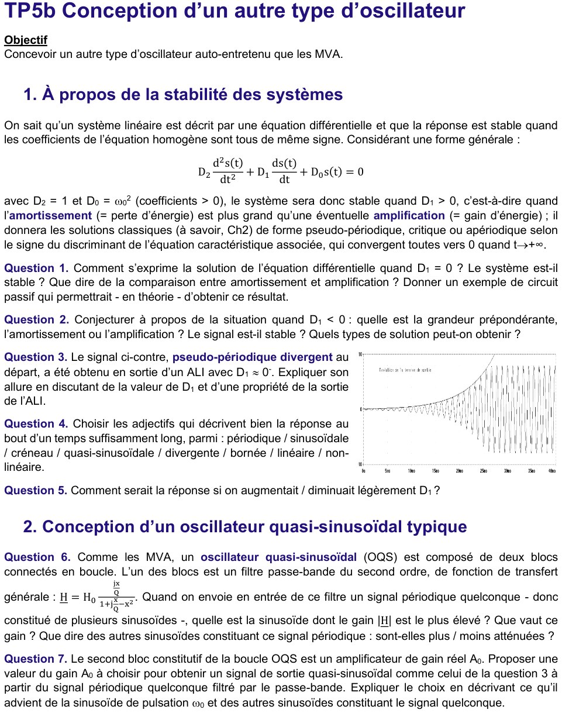
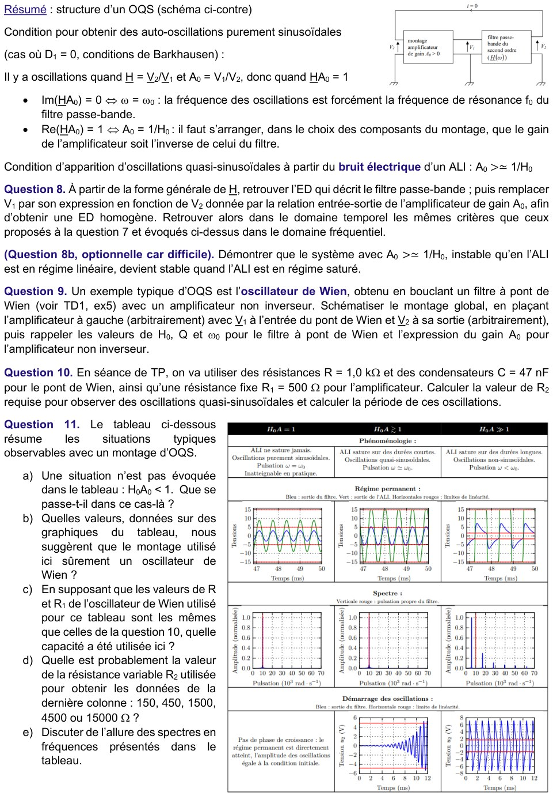
Cadre : \(\ D_2\ddot s+D_1\dot s+D_0 s=0\) avec \(D_2=1\), \(D_0=\omega_0^2>0\). Équation caractéristique \(r^2+D_1r+\omega_0^2=0\), de discriminant \(\Delta=D_1^2-4\omega_0^2\) et de racines de partie réelle \(-D_1/2\). Le coefficient \(D_1\) mesure le bilan d'énergie : \(D_1>0\) = les pertes l'emportent (amortissement) ; \(D_1<0\) = le gain l'emporte (amplification).
Q1) Solution quand \(D_1=0\) ; stabilité ; amortissement vs amplification ; circuit passif d'exemple
L'équation devient \(\ddot s+\omega_0^2s=0\) : les racines sont imaginaires pures \(\pm j\omega_0\), donc
- Stabilité : le signal ne diverge pas mais ne tend pas non plus vers 0 : le système est à la limite de la stabilité (« juste instable » dans le vocabulaire du cours) — borné, mais pas asymptotiquement stable.
- Bilan d'énergie : l'amortissement (pertes) est exactement compensé par l'amplification (apport d'énergie) : ici ni l'un ni l'autre n'agit, l'énergie se conserve.
- Exemple de circuit passif : le circuit \(LC\) idéal (sans résistance) : \(\ddot u+\dfrac{u}{LC}=0\), donc \(\omega_0=\dfrac1{\sqrt{LC}}\). En théorie seulement : toute résistance réelle donne \(D_1=R/L>0\) et amortit les oscillations.
Q2) Situation \(D_1<0\) : grandeur prépondérante, stabilité, types de solutions
Les racines ont une partie réelle \(-D_1/2=|D_1|/2>0\) : l'enveloppe croît en \(e^{|D_1|t/2}\). Selon le discriminant :
- \(\Delta<0\) soit \(|D_1|<2\omega_0\) : solution pseudo-périodique divergente, \(s=e^{|D_1|t/2}(A\cos\Omega t+B\sin\Omega t)\) avec \(\Omega=\sqrt{\omega_0^2-D_1^2/4}\) ;
- \(\Delta\ge0\) soit \(|D_1|\ge2\omega_0\) : solution apériodique divergente (somme d'exponentielles croissantes), sans oscillation.
Q3) Signal pseudo-périodique divergent au départ, puis d'amplitude constante : explication
Sur la courbe fournie, l'enveloppe croît d'abord exponentiellement (courbe pointillée) avec des oscillations de période presque constante ; puis les oscillations cessent de croître et s'installent à une amplitude constante (environ ±8 V). Explication en deux temps :
- Au départ : \(D_1\) est légèrement négatif (\(D_1\approx0^-\), donc \(|D_1|\ll2\omega_0\)) : l'ALI est en régime linéaire, l'équation est celle de Q2 (pseudo-périodique divergent, pulsation \(\Omega\simeq\omega_0\)), l'enveloppe croît lentement en \(e^{|D_1|t/2}\) (lecture grossière sur la courbe : l'enveloppe est multipliée par ≈12 entre 10 ms et 25 ms, soit \(|D_1|/2\approx1{,}7\times10^2\ \text{s}^{-1}\)).
- Ensuite : la sortie de l'ALI est bornée par ses tensions d'alimentation (\(|s|\le V_{sat}\)). Quand l'amplitude atteint cette limite, l'ALI sature : le modèle linéaire (\(D_1\) constant) n'est plus valable, le gain effectif chute (il diminue quand l'amplitude croît) et l'amplitude cesse de croître.
Q4) Adjectifs décrivant la réponse après un temps long
- périodique : le régime permanent se répète à l'identique ; bornée : l'amplitude ne diverge plus (saturation) ; non linéaire : c'est précisément la saturation (non-linéarité) qui borne le signal ;
- quasi-sinusoïdale et non sinusoïdale : la saturation, même brève, déforme légèrement le sinus (apparition d'harmoniques, cf. Q11 et réalisation §2) ;
- exclus : sinusoïdale (sinus pur seulement si \(D_1=0\) exactement), créneau (il faudrait \(D_1\) très négatif, cf. Q5), divergente (bornée par la saturation), linéaire.
Q5) Effet d'une légère augmentation / diminution de \(D_1\)
- \(D_1\) augmente légèrement (se rapproche de 0⁻) : l'exponentielle croît plus lentement (démarrage plus long), l'ALI ne sature que sur des durées plus courtes, le signal est plus proche d'une sinusoïde. À \(D_1=0\) : sinus pur (inatteignable en pratique) ; à \(D_1>0\) : oscillations amorties, qui s'éteignent.
- \(D_1\) diminue légèrement (plus négatif) : croissance plus rapide, saturation plus tôt et sur des durées plus longues ; le signal est plus déformé (tendance au créneau) et sa pulsation s'éloigne de \(\omega_0\) (colonne de droite du tableau de la Q11).
Q6) Quelle sinusoïde le filtre passe-bande favorise-t-il ? Gain ? Et les autres ?
Avec \(x=\omega/\omega_0\), \(\ \underline H=H_0\dfrac{jx/Q}{1+jx/Q-x^2}\). En divisant numérateur et dénominateur par \(jx/Q\) :
\[ \underline H=\frac{H_0}{1+jQ\left(x-\dfrac1x\right)},\qquad |\underline H|=\frac{H_0}{\sqrt{1+Q^2\left(x-\dfrac1x\right)^2}} . \]Le dénominateur est minimal quand \(x-\dfrac1x=0\), c'est-à-dire \(x=1\) :
Q7) Choix de \(A_0\) pour un signal quasi-sinusoïdal ; devenir de \(\omega_0\) et des autres sinusoïdes
Après un tour de boucle, une sinusoïde de pulsation \(\omega\) est multipliée par le gain de boucle \(A_0\underline H(j\omega)\).
- Pour \(\omega_0\) : \(|A_0\underline H|=1+\varepsilon>1\) et phase nulle : la sinusoïde est amplifiée à chaque tour (croissance lente, \(D_1\approx0^-\)), jusqu'à ce que l'ALI sature légèrement.
- Pour toute autre pulsation (hors d'une bande très étroite autour de \(\omega_0\)) : \(|A_0\underline H|<1\) : elle est atténuée à chaque tour et finit par disparaître.
Seule la sinusoïde \(\omega_0\) survit : le signal est quasi-sinusoïdal. Avec \(A_0\gg1/H_0\), une large bande de fréquences (harmoniques comprises) aurait un gain de boucle supérieur à 1 : elles seraient toutes entretenues, d'où un signal très déformé (Q11, colonne de droite).
Q8) Équation différentielle du filtre bouclé ; critères dans le domaine temporel
On traduit \(\underline H\) en équation différentielle : \(\bigl(1+\tfrac{jx}{Q}-x^2\bigr)V_2=H_0\tfrac{jx}{Q}V_1\), avec \(jx\leftrightarrow\dfrac1{\omega_0}\dfrac{d}{dt}\) :
\[ V_2+\frac1{Q\omega_0}\dot V_2+\frac1{\omega_0^2}\ddot V_2=\frac{H_0}{Q\omega_0}\dot V_1 . \]L'amplificateur impose \(V_1=A_0V_2\). En remplaçant et en multipliant par \(\omega_0^2\) :
\[ \boxed{\ \ddot V_2+\frac{\omega_0}{Q}\,(1-H_0A_0)\,\dot V_2+\omega_0^2V_2=0\ } \]C'est l'équation \(D_2\ddot s+D_1\dot s+D_0s=0\) avec \(D_2=1\), \(\ D_1=\dfrac{\omega_0}{Q}(1-H_0A_0)\), \(\ D_0=\omega_0^2\). On retrouve en temporel tous les critères :
- \(D_1=0\iff H_0A_0=1\iff A_0=\dfrac1{H_0}\) : oscillations sinusoïdales pures, de pulsation \(\sqrt{D_0/D_2}=\omega_0\) (Barkhausen, \(\operatorname{Re}(\underline H A_0)=1\) et \(\operatorname{Im}=0\)) ;
- \(D_1\lt0\iff H_0A_0>1\) : instabilité (oscillations croissantes) — avec \(H_0A_0\gtrsim1\), \(D_1\approx0^-\) : démarrage à partir du bruit, pseudo-pulsation \(\Omega=\omega_0\sqrt{1-D_1^2/(4\omega_0^2)}\simeq\omega_0\) ;
- \(D_1>0\iff H_0A_0<1\) : oscillations amorties, rien ne s'entretient.
Q8b) (optionnelle) Pourquoi le système \(A_0\gtrsim1/H_0\), instable en régime linéaire, devient-il stable en régime saturé ?
Raisonnement par le premier harmonique (méthode approchée, valable car le passe-bande filtre les harmoniques créés). L'amplificateur est linéaire de gain \(A_0\) tant que \(|s|<V_{sat}\), puis écrête. Pour \(V_2=V_m\cos\omega t\) :
- si \(V_m<V_{sat}/A_0\) : \(s=A_0V_2\), gain \(A_0\) ;
- si \(V_m>V_{sat}/A_0\) : \(s\) est écrêtée ; l'amplitude de son fondamental est \(A_{eq}(V_m)\,V_m\) avec un gain équivalent \(A_{eq}(V_m)<A_0\), décroissant quand \(V_m\) augmente (pour \(V_m\gg V_{sat}/A_0\) : \(A_{eq}\to\dfrac{4V_{sat}}{\pi V_m}\), fondamental d'un créneau).
Le système se comporte donc comme un système linéaire de coefficient \(D_1(V_m)=\dfrac{\omega_0}{Q}\bigl(1-H_0A_{eq}(V_m)\bigr)\) qui augmente avec l'amplitude :
- \(V_m\) petit : \(H_0A_0>1\), \(D_1<0\) : l'amplitude croît ;
- \(V_m\) grand : \(H_0A_{eq}<1\), \(D_1>0\) : l'amplitude décroît ;
- il existe une amplitude \(V_m^*\) telle que \(H_0A_{eq}(V_m^*)=1\) (\(D_1=0\)) ; c'est un équilibre stable (cycle limite) : on y revient dans les deux sens.
Ordres de grandeur pour l'oscillateur de Wien (\(H_0=\tfrac13\)) : \(H_0A_0\gtrsim1\) donne \(V_m^*\gtrsim V_{sat}/A_0\simeq5\) V sur \(V_2\) (écrêtage à peine amorcé) ; \(H_0A_0\gg1\) donne \(V_m^*\approx\dfrac{4H_0V_{sat}}{\pi}\approx6{,}4\) V, avec un fort écrêtage.
Q9) Schéma global ; valeurs de \(H_0\), \(Q\), \(\omega_0\) du pont de Wien ; gain \(A_0\) de l'amplificateur non inverseur
On boucle le filtre à pont de Wien (TD1, Ex5) avec un amplificateur non inverseur : la sortie de l'amplificateur \(V_1\) attaque le pont, et la sortie du pont \(V_2\) est renvoyée sur l'entrée \((+)\) de l'ALI.
Pont de Wien (rappel TD1 Ex5) : \(R\) en série avec \(C\), puis \(R\parallel C\) en sortie :
\[ \underline H=\frac{jRC\omega}{1+3jRC\omega-(RC\omega)^2}\ \Longrightarrow\ H_0=\frac13,\quad Q=\frac13,\quad \omega_0=\frac1{RC}. \]Amplificateur non inverseur : \(V_2\) sur \((+)\), \(R_1\) de \((-)\) à la masse, \(R_2\) de la sortie à \((-)\) : \(\ v_-=\dfrac{R_1}{R_1+R_2}V_1=V_2\) (ALI idéal linéaire) donc
Q10) \(R=1{,}0\ \text{k}\Omega\), \(C=47\) nF, \(R_1=500\ \Omega\) : valeur de \(R_2\) pour des oscillations quasi-sinusoïdales ; période
Condition d'oscillations quasi-sinusoïdales : \(A_0\gtrsim\dfrac1{H_0}=3\). Soit \(1+\dfrac{R_2}{R_1}\gtrsim3\), c'est-à-dire :
Pulsation, fréquence et période (le montage oscille à \(\omega_0\), pulsation propre du pont) :
\[ \omega_0=\frac1{RC}=\frac1{10^3\times47\times10^{-9}}=2{,}13\times10^4\ \text{rad·s}^{-1},\quad f_0=\frac{\omega_0}{2\pi}\approx3{,}39\ \text{kHz},\quad T_0=2\pi RC\approx\mathbf{295\ \mu s}. \]Le tableau de la feuille (reproduit en page 2 de l'énoncé ci-dessus) compare trois colonnes : \(H_0A=1\), \(H_0A\gtrsim1\), \(H_0A\gg1\), avec, pour chacune, les oscillogrammes (bleu = sortie du filtre \(V_2\), vert = sortie de l'ALI \(V_1\), droites rouges = limites de linéarité), le spectre (raie rouge = pulsation propre du filtre) et le démarrage des oscillations.
a) Le cas non évoqué : \(H_0A_0<1\)
b) Quelles valeurs suggèrent un oscillateur de Wien ?
- Les limites de linéarité : colonne centrale, le filtre sature l'ALI vers \(\pm5\) V (droites rouges sur \(V_2\)) alors que l'ALI sature à \(\pm15\) V (droites rouges sur \(V_1\)). Le rapport \(V_1/V_2=15/5=3\) est le gain \(A_0\) au seuil, donc \(H_0=1/A_0=\tfrac13\) : c'est exactement le \(H_0\) du pont de Wien.
- Le rapport des amplitudes en première colonne : la sortie de l'ALI (vert, ≈9 V) vaut environ 3 fois celle du filtre (bleu, ≈3 V), cohérent avec \(A_0H_0=1\) et \(H_0=\tfrac13\).
- La pulsation propre : la raie rouge des spectres est à \(\omega_0\approx10\times10^3\) rad·s⁻¹ ; pour un Wien \(\omega_0=1/RC\) (pas de facteur supplémentaire).
c) Capacité utilisée (même \(R\) et même \(R_1\) qu'en Q10)
(Ce n'est donc pas la valeur de 47 nF du TP, pour lequel \(\omega_0=2{,}13\times10^4\) rad·s⁻¹.)
d) Valeur probable de \(R_2\) pour la dernière colonne (\(H_0A_0\gg1\))
Sur les oscillogrammes de la dernière colonne, les droites rouges de linéarité du filtre sont à environ \(\pm1{,}7\) V. L'ALI sature donc quand \(|A_0V_2|=15\) V avec \(V_2\approx1{,}7\) V : \(A_0\approx\dfrac{15}{1{,}7}\approx9\). Alors \(R_2=(A_0-1)R_1\approx(9\text{ à }10-1)\times500\) :
Vérification par élimination : 150 Ω et 450 Ω (\(A_0=1{,}3\) et \(1{,}9\)) donnent \(H_0A_0<1\), donc pas d'oscillations ; 1500 Ω (\(A_0=4\), \(H_0A_0=1{,}33\)) est trop proche du seuil, limite de linéarité \(15/4=3{,}75\) V ; 15000 Ω (\(A_0=31\)) donnerait une limite de \(15/31\approx0{,}5\) V, plus faible que les \(\pm1{,}7\) V lus.
e) Allure des spectres
- \(H_0A=1\) : une seule raie, exactement à \(\omega_0\) : sinusoïde pure (aucune harmonique).
- \(H_0A\gtrsim1\) : une raie dominante à \(\omega\simeq\omega_0\) (très légèrement décalée), et des harmoniques très faibles à \(3\omega_0\), \(5\omega_0\)… (distorsion harmonique faible) : quasi-sinusoïdal.
- \(H_0A\gg1\) : la raie fondamentale est décalée vers les basses pulsations (≈6×10³ rad·s⁻¹ au lieu de \(\omega_0\) : \(\omega<\omega_0\)) et des harmoniques impairs (≈18, 30, 42… ×10³ rad·s⁻¹) d'amplitude lentement décroissante (≈0,3 ; 0,1 ; 0,07…) : signal très déformé, proche d'un signal à symétrie « créneau ». Il n'y a que des harmoniques impairs car le signal garde la symétrie \(s(t+T/2)=-s(t)\).
- Démarrage : colonne centrale, croissance exponentielle lente jusqu'à la limite de linéarité (≈ ±4,8 V sur \(V_2\)), puis amplitude constante ; colonne de droite, démarrage très rapide directement dans un régime saturé ; colonne de gauche, pas de phase de croissance (l'amplitude reste égale à la condition initiale, cas idéal).
4.2 · TP5b — Réalisation d'un oscillateur quasi-sinusoïdal (14/10/2026)
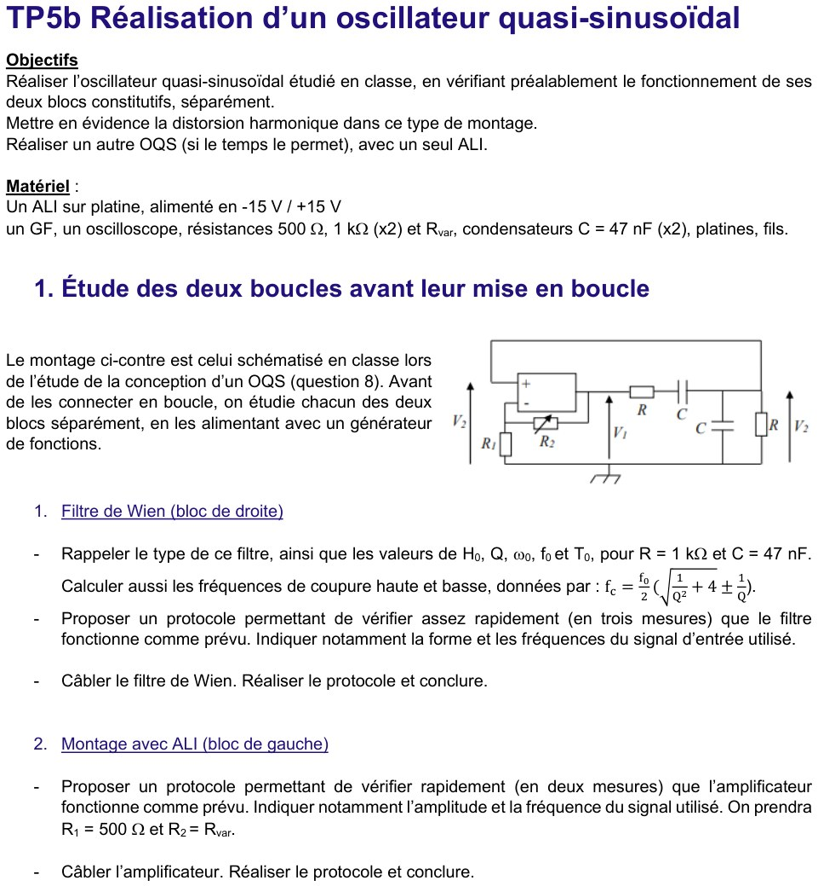
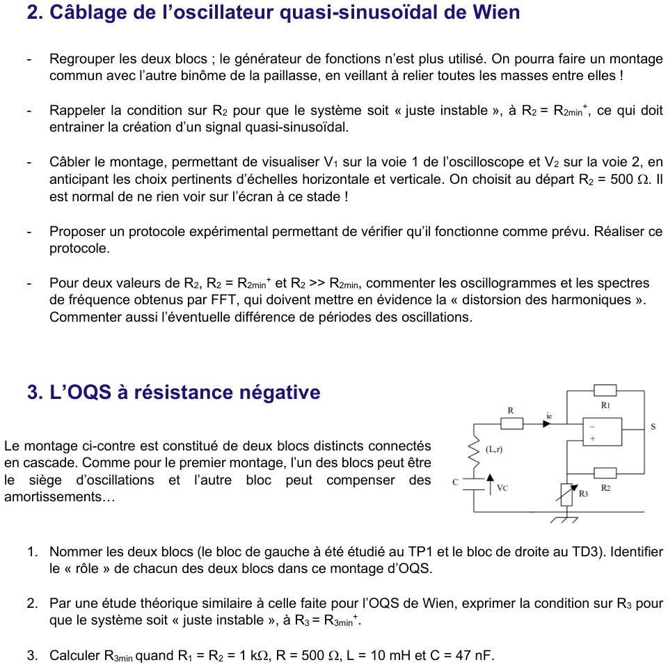
Type du filtre ; \(H_0\), \(Q\), \(\omega_0\), \(f_0\), \(T_0\) ; fréquences de coupure
C'est un filtre passe-bande du 2ᵈ ordre (pont de Wien, \(R\) et \(C\) série puis \(R\parallel C\)), avec \(R=1\ \text{k}\Omega\) et \(C=47\) nF :
| Grandeur | Expression | Valeur |
|---|---|---|
| \(H_0\) | \(\dfrac13\) | 0,333 |
| \(Q\) | \(\dfrac13\) | 0,333 |
| \(\omega_0\) | \(\dfrac1{RC}\) | \(2{,}13\times10^4\ \text{rad·s}^{-1}\) |
| \(f_0\) | \(\dfrac1{2\pi RC}\) | 3,39 kHz |
| \(T_0\) | \(2\pi RC\) | 295 µs |
Fréquences de coupure à −3 dB : \(\ f_c=\dfrac{f_0}2\Bigl(\sqrt{\tfrac1{Q^2}+4}\pm\tfrac1Q\Bigr)=\dfrac{f_0}2\bigl(\sqrt{13}\pm3\bigr)\), car \(1/Q^2=9\) et \(1/Q=3\). Avec \(\sqrt{13}\approx3{,}606\) :
\[ f_{c,haute}=\frac{3386}{2}\,(3{,}606+3)\approx11{,}2\ \text{kHz},\qquad f_{c,basse}=\frac{3386}{2}\,(3{,}606-3)\approx1{,}03\ \text{kHz}. \]Vérifications : \(f_{c,basse}\,f_{c,haute}=f_0^2\) (\(1{,}025\times11{,}18\approx11{,}46=3{,}386^2\)) et bande passante \(\Delta f=f_0/Q=3f_0\approx10{,}2\) kHz \(=11{,}18-1{,}03\) ✓.
Protocole en trois mesures pour vérifier le filtre ; mise en œuvre
Entrée : tension sinusoïdale du GF, amplitude \(E_m=3{,}0\) V (choix commode : sortie de 1,0 V au maximum), sans offset ; on relève \(V_{2m}\) (voie 2) et le déphasage par rapport à l'entrée (voie 1). On réalise trois mesures :
| Fréquence | Gain attendu \(\lvert H\rvert\) | \(V_{2m}\) pour \(E_m=3\) V | Déphasage attendu |
|---|---|---|---|
| \(f_0=3{,}39\) kHz | \(H_0=\tfrac13\) | 1,00 V | 0° (en phase) |
| \(f_{c,basse}\approx1{,}03\) kHz | \(\dfrac{H_0}{\sqrt2}=0{,}236\) | 0,71 V | +45° (avance) |
| \(f_{c,haute}\approx11{,}2\) kHz | \(\dfrac{H_0}{\sqrt2}=0{,}236\) | 0,71 V | −45° (retard) |
Conclusion attendue : au centre le gain vaut \(\tfrac13\) et la sortie est en phase avec l'entrée (courbe de Lissajous réduite à une droite) ; aux deux coupures le gain tombe de \(\sqrt2\) et le déphasage vaut ±45°. Si c'est vérifié (à quelques % près, tolérance de \(R\) et \(C\) comprise), le filtre fonctionne comme prévu.
Protocole en deux mesures pour vérifier \(A_0=1+R_2/R_1\) (\(R_1=500\ \Omega\), \(R_2=R_{var}\))
Entrée : sinusoïde \(E_m=1{,}0\) V à \(f=1\) kHz (bien en dessous de la limite de bande de l'ALI, et sortie bornée loin de la saturation : \(A_0E_m\le5\) V\(<V_{sat}\)). On règle \(R_{var}\) à deux valeurs et on mesure le gain et la phase :
| \(R_2\) | \(A_0=1+R_2/R_1\) | \(s_m\) attendu | Phase \(s/e\) |
|---|---|---|---|
| 1,0 kΩ | 3 | 3,0 V | 0° (non inverseur) |
| 2,0 kΩ | 5 | 5,0 V | 0° |
Conclusion attendue : gain réel positif égal à \(1+R_2/R_1\) (pas de déphasage). On mesure \(R_{var}\) à l'ohmmètre (composant débranché) pour éviter l'erreur sur \(R_2\). Si on se trompe de borne de l'ALI, le gain devient négatif (montage inverseur) : à vérifier absolument car l'oscillateur ne démarrerait pas.
Condition « juste instable » \(R_2=R_{2min}^+\)
Condition d'oscillation \(H_0A_0=1\) avec \(H_0=\tfrac13\) : \(A_0=3\), c'est-à-dire \(1+\dfrac{R_2}{R_1}=3\) :
Câblage ; choix des échelles ; départ à \(R_2=500\ \Omega\)
- Voie 1 : \(V_1\) (sortie de l'ALI), voie 2 : \(V_2\) (sortie du pont) ; masses communes obligatoires (oscillo, GF absent, deux platines).
- Échelles : période \(T_0\approx295\ \mu\text{s}\) ⇒ base de temps 50 à 100 µs/div (3 à 6 périodes à l'écran) ; \(V_1\) monte jusqu'à \(\pm V_{sat}\) ⇒ 5 V/div ; \(V_2\) vaut environ \(V_1/3\) ⇒ 2 V/div. Déclenchement sur la voie 2 (front montant, niveau 0).
- \(R_2=500\ \Omega\) : \(A_0=2\), \(H_0A_0=\tfrac23<1\) : \(D_1>0\), le bruit est amorti, on ne voit rien (normal).
Protocole expérimental de vérification
- Augmenter lentement \(R_{var}\) en partant de 500 Ω : le signal apparaît quand \(R_2\) dépasse \(\approx1{,}0\) kΩ (seuil réel un peu différent : tolérances de \(R\), \(C\), \(R_1\), résistance de sortie de l'ALI).
- Mesurer la période : \(T\approx T_0=295\ \mu\text{s}\) (\(f\approx3{,}4\) kHz).
- Vérifier que \(V_1\) et \(V_2\) sont en phase (\(A_0\) réel positif) et que \(V_{1m}/V_{2m}\approx A_0\approx3\) tant que l'ALI ne sature pas.
- Relever l'amplitude : elle croît avec \(R_2\) (écrêtage de plus en plus marqué) ; mesurer le spectre par FFT (cf. plus bas).
Deux valeurs de \(R_2\) : \(R_2=R_{2min}^+\) et \(R_2\gg R_{2min}\) — oscillogrammes, spectres, périodes
Résultats d'une simulation de l'oscillateur (équations du pont + ALI idéal saturant à \(\pm15\) V) pour \(R_2=1{,}05\ \text{k}\Omega\) et \(R_2=5\ \text{k}\Omega\), régime permanent :
| \(R_2=R_{2min}^+\approx1{,}05\ \text{k}\Omega\) | \(R_2=5\ \text{k}\Omega\gg R_{2min}\) | |
|---|---|---|
| \(A_0\), \(H_0A_0\) | 3,1 ; 1,03 | 11 ; 3,7 |
| Saturation de l'ALI | à peine, sur de très courtes durées | sur de longues durées (V₁ ≈ créneau ±15 V) |
| Période \(T\) | ≈ 297 µs (≈ \(T_0\), \(f\approx3{,}36\) kHz) | ≈ 570 µs (\(f\approx1{,}75\) kHz ≈ \(0{,}52\,f_0\)) |
| Amplitude de \(V_2\) | ≈ 5,3 V (≈ \(V_{sat}/A_0\)) | ≈ 7,4 V (pics) |
| Harmoniques de \(V_2\) (rapport à la raie fondamentale) | \(3f\) : 3 % ; \(5f\) : 1 % | \(3f\) : 35 % ; \(5f\) : 17 % ; \(7f\) : 10 % |
| Distorsion harmonique totale de \(V_2\) | ≈ 3,5 % | ≈ 40 % |
Commentaires. Pour \(R_2=R_{2min}^+\) le montage est « juste instable » : la saturation ne se produit qu'au sommet des alternances, le signal est quasi-sinusoïdal, de période égale à \(T_0\). Pour \(R_2\gg R_{2min}\) (\(H_0A_0\gg1\)), \(V_1\) devient presque un créneau et \(V_2\) (le créneau filtré par le passe-bande, qui « arrondit » chaque palier) est très déformé : distorsion des harmoniques (spectre riche en harmoniques impairs, \(3f\), \(5f\), …). La période est aussi plus longue (\(\omega<\omega_0\)) : l'ALI sature longtemps, le système n'est plus dans le régime sinusoïdal à \(\omega_0\) imposé par la condition de phase de Barkhausen ; c'est un oscillateur à relaxation dont la fréquence dépend de \(R_2\).
1) Nommer les deux blocs et leur rôle
- Bloc de gauche (TP1) : le circuit RLC série (\(R\), bobine \((L,r)\), condensateur \(C\)), d'après la tension \(V_C\) du condensateur. C'est le siège des oscillations (échange d'énergie entre \(L\) et \(C\), pulsation \(\omega_0=1/\sqrt{LC}\)), mais avec des pertes (\(R+r\)) : seul, il est amorti.
- Bloc de droite (TD3, Ex3) : le convertisseur à résistance négative (NIC), ALI idéal avec \(R_1\) vers \((-)\), \(R_2\) vers \((+)\), \(R_3\) de \((+)\) à la masse, qui se comporte comme une résistance \(-R_n\) avec \(R_n=\dfrac{R_1R_3}{R_2}\) (TD3 : \(v_e/i_e=-R_1R_3/R_2\)). Son rôle : compenser l'amortissement, en fournissant de l'énergie (prélevée sur l'alimentation de l'ALI) au circuit RLC.
2) Condition sur \(R_3\) pour que le système soit « juste instable », \(R_3=R_{3min}^+\)
On remplace le NIC par sa résistance équivalente \(-R_n\) : la maille est un RLC série de résistance totale \(R_t=R+r-R_n\). La loi des mailles (avec \(i=-C\dot V_C\), le courant circulant vers le haut dans la branche de \(C\)) donne l'équation de \(V_C\) :
\[ \ddot V_C+\frac{R+r-R_n}{L}\,\dot V_C+\frac1{LC}V_C=0,\qquad R_n=\frac{R_1R_3}{R_2}. \]On est ramené à la forme \(\ddot s+D_1\dot s+\omega_0^2s=0\) avec \(\omega_0=\dfrac1{\sqrt{LC}}\) et \(D_1=\dfrac{R+r-R_n}L\). Comme pour le Wien :
- \(D_1>0\iff R_n<R+r\) : amorti ; \(D_1=0\iff R_n=R+r\) : oscillations sinusoïdales pures ; \(D_1<0\iff R_n>R+r\) : instable.
3) Calcul de \(R_{3min}\) : \(R_1=R_2=1\ \text{k}\Omega\), \(R=500\ \Omega\), \(L=10\) mH, \(C=47\) nF
L'énoncé ne donne pas la résistance \(r\) de la bobine : on la néglige (hypothèse à signaler ; pour une vraie bobine de 10 mH, \(r\) vaut de l'ordre de la dizaine d'ohms, ce qui décale \(R_{3min}\) de la même quantité). Avec \(R_2/R_1=1\) :
Fréquence des oscillations attendue : \(\omega_0=\dfrac1{\sqrt{10^{-2}\times47\times10^{-9}}}=\dfrac1{\sqrt{4{,}7\times10^{-10}}}\approx4{,}61\times10^4\ \text{rad·s}^{-1}\), soit \(f_0=\dfrac{\omega_0}{2\pi}\approx7{,}34\ \text{kHz}\) (\(T\approx136\ \mu\)s). Facteur de qualité du RLC seul : \(Q=\dfrac1R\sqrt{\dfrac LC}=\dfrac{461}{500}\approx0{,}92\) (\(\sqrt{L/C}=\sqrt{10^{-2}/(47\times10^{-9})}\approx461\ \Omega\)). Réglage pratique : on part de \(R_3<500\ \Omega\) (rien ne se passe), on augmente \(R_3\) jusqu'à voir apparaître les oscillations à \(\approx7{,}3\) kHz.
5. Exercices d'entraînement créés
Trois exercices dans l'esprit du TD5 et du TP5a (dimensionner un oscillateur), avec solutions complètes vérifiées numériquement.
On veut réaliser le montage du TD5 Ex1 avec \(V_{sat}=15\) V, des basculements à \(\pm2{,}5\) V, une fréquence \(f=500\) Hz et \(C=100\) nF. a) Déterminer \(R_2/R_1\). b) Déterminer \(R\), puis choisir des valeurs normalisées (série E24) et calculer la fréquence réelle. c) Quelle est l'erreur commise si l'on utilise la formule approchée \(T\approx4\alpha RC\) ?
a) Rapport \(R_2/R_1\)
Les seuils d'un comparateur inverseur valent \(\pm\alpha V_{sat}\) avec \(\alpha=\dfrac{R_1}{R_1+R_2}\) : \[ \alpha=\frac{2{,}5}{15}=\frac16\ \Longrightarrow\ R_1+R_2=6R_1\ \Longrightarrow\ \boxed{R_2=5R_1}. \] On choisit \(R_1=10\ \text{k}\Omega\), \(R_2=50\ \text{k}\Omega\) (\(50\ \text{k}\Omega=\) \(47\ \text{k}\Omega\) + \(3{,}3\ \text{k}\Omega\) en série, ou simplement la valeur \(51\ \text{k}\Omega\) de la série E24 : \(\alpha=10/61=0{,}164\), seuil \(2{,}46\) V).
b) Résistance \(R\) et fréquence réelle
\(T=\dfrac1f=2{,}0\) ms \(=2RC\ln\dfrac{1+\alpha}{1-\alpha}\) avec \(\dfrac{1+\alpha}{1-\alpha}=\dfrac{7/6}{5/6}=\dfrac75=1{,}4\) et \(\ln1{,}4=0{,}33647\) : \[ R=\frac{T}{2C\ln1{,}4}=\frac{2{,}0\times10^{-3}}{2\times10^{-7}\times0{,}33647}=2{,}972\times10^{4}\ \Omega\approx29{,}7\ \text{k}\Omega. \] Valeur E24 la plus proche : \(R=30\ \text{k}\Omega\) : \[ T=2\times30\times10^3\times10^{-7}\times0{,}33647=2{,}019\ \text{ms}\ \Rightarrow\ f=495\ \text{Hz}\quad(-0{,}9\ \%). \]
c) Formule approchée
\(T_{approx}=4\alpha RC=4\times\tfrac16\times30\times10^3\times10^{-7}=2{,}000\) ms au lieu de \(2{,}019\) ms : erreur relative \(\dfrac{2{,}019-2{,}000}{2{,}019}\approx0{,}9\ \%\) — petite parce que \(\alpha=1/6\) est faible (\(\ln\dfrac{1+\alpha}{1-\alpha}=2\alpha+\dfrac{2\alpha^3}{3}+\dots\), l'écart relatif est \(\approx\alpha^2/3\approx0{,}9\ \%\)). Pour \(\alpha=0{,}5\) elle serait de \(9\ \%\).
Montage de l'Ex3 du TD5 avec \(L=100\) mH, \(R=2{,}0\ \text{k}\Omega\), \(R_1=10\ \text{k}\Omega\), \(V_{sat}=15\) V. a) Quelle capacité \(C\) donne \(f_0=1{,}00\) kHz ? b) On règle \(r=1{,}9\ \text{k}\Omega\) : les oscillations démarrent-elles ? Quelle est leur loi de croissance ? c) Combien de temps pour passer de 1 mV à la saturation ? d) Quelle est l'amplitude finale de \(u\) ?
a) Capacité
\(f_0=\dfrac1{2\pi\sqrt{LC}}\Rightarrow C=\dfrac1{(2\pi f_0)^2L}=\dfrac{1}{(6283)^2\times0{,}1}=\dfrac1{3{,}948\times10^{6}}=2{,}53\times10^{-7}\ \text{F}\).
b) Démarrage et croissance
Condition de démarrage (TD5 Ex3 Q4) : \(r\lt R\). Ici \(r=1{,}9\ \text{k}\Omega\lt2{,}0\ \text{k}\Omega\) : oui. Le coefficient de \(\dot u\) vaut \[ \frac1C\Big(\frac1R-\frac1r\Big)=\frac1{2{,}53\times10^{-7}}\Big(5{,}000\times10^{-4}-5{,}263\times10^{-4}\Big)=-1{,}04\times10^{2}\ \text{s}^{-1}. \] L'équation \(\ddot u-104\,\dot u+\omega_0^2u=0\) a pour solution \(u(t)\approx U_0\,e^{\sigma t}\cos\omega_0t\) avec \(\sigma=\dfrac{104}{2}=52\ \text{s}^{-1}\) (constante de temps d'amplitude \(\tau=1/\sigma=19{,}2\) ms, soit \(\approx19\) périodes de 1 ms).
c) Durée du régime transitoire
Il faut \(e^{\sigma t}=\dfrac{U_{fin}}{U_0}\). De 1 mV à \(\approx2{,}4\) V (valeur de d), le rapport est \(\approx2{,}4\times10^3\) : \(t=\dfrac{\ln(2{,}4\times10^3)}{52}=\dfrac{7{,}78}{52}\approx0{,}15\) s (\(\approx150\) périodes). Plus \(r\) est proche de \(R\), plus c'est long (\(\sigma\to0\)) : compromis démarrage rapide / déformation du signal.
d) Amplitude finale
L'ALI sature quand \(|s|=V_{sat}\). Or \(u=s\,\dfrac r{R_1+r}\) (Ex3 Q1) : \[ |u|_{max}\approx V_{sat}\frac{r}{R_1+r}=15\times\frac{1{,}9}{10+1{,}9}=2{,}4\ \text{V}. \]
Avec le montage du TD5 Ex2 (diodes idéales, \(V_{sat}=15\) V, \(R_4=10\ \text{k}\Omega\), \(C=100\) nF), on veut une tension \(u(t)\) en dents de scie de fréquence \(250\) Hz, d'amplitude crête \(5\) V, descendant pendant 75 % de la période et montant pendant 25 %. Déterminer \(R_1\), \(R_2\), \(R_3\) et les pentes.
Résolution
- \(R_3\) : amplitude crête \(A=\dfrac{R_3}{R_4}V_{sat}=5\) V \(\Rightarrow\dfrac{R_3}{R_4}=\dfrac13\Rightarrow R_3=3{,}33\ \text{k}\Omega\) (E24 : \(3{,}3\ \text{k}\Omega\), \(A=4{,}95\) V).
- Durées : \(T=\dfrac1{250}=4\) ms ; descente (\(v_s=+V_{sat}\), via \(R_1\)) : \(t_{desc}=0{,}75\,T=3\) ms ; montée (via \(R_2\)) : \(t_{mont}=0{,}25\,T=1\) ms.
- \(R_1\) : \(t_{desc}=2\dfrac{R_3}{R_4}R_1C\Rightarrow R_1=\dfrac{t_{desc}}{2\times\frac13\times C}=\dfrac{3\times10^{-3}}{\frac23\times10^{-7}}=45\ \text{k}\Omega\).
- \(R_2\) : \(t_{mont}=2\dfrac{R_3}{R_4}R_2C\Rightarrow R_2=\dfrac{1\times10^{-3}}{\frac23\times10^{-7}}=15\ \text{k}\Omega\).
Vérification : \(T=2\cdot\tfrac13\,(R_1+R_2)\,C=\tfrac23\times60\times10^3\times10^{-7}=4\) ms ✓ ; \(\eta_{haut}=R_1/(R_1+R_2)=75\ \%\) ✓.
📂 Documents donnés
Feuilles officielles de D. Courtois, récupérées sur Moodle (AM2 · Électronique · Chapitre 5). Cliquez pour ouvrir.
TD (énoncé)
TP5a — multivibrateur astable
TP5b — oscillateur quasi-sinusoïdal
Cursus AM2 · P2030 · Semestre 3 · Partie Électronique, D. Courtois : TP5a conception du 05/10/2026, TP5a réalisation du 07/10/2026, TD5 du 08/10/2026, TP5b conception du 12/10/2026, TP5b réalisation du 14/10/2026. Ce chapitre prolonge le Ch4 — ALI en régime saturé (comparateurs, trigger de Schmitt) et précède le Ch6 — Électronique numérique.